bulunuyordu. Halife halka adil davranılmasını buyurdu. Halife Arapça konuşuyor, vezir
Sümeyremi, konuşmayı Farsçaya tercüme ediyordu. Halife her iki vezire de birer kılıç
vererek, bu kılıçları Sultan’a takmalarını emretti. Bu kılıçlar ile kâfirler ve mülhitler yok
edilecekti. Sonra Halife Sultana iki bayrak verdi. Sultan Halifeye tekrar hizmet ederek,
huzurdan çıktı. Dışarıda Sultana hediyeler sunuldu. Merasim bitmişti.
Ertesi gün, Sultanın Halifeyi ziyaretini iade etmek için Halife adına veziri, Sultanın sarayına
geldi. Vezir Halifenin halifelik makamına cülus ederken giydiği cübbeyi, Sultana hediye etti.
Sultandan sonra Sultanın vezirini de ziyaret edip, hilat verdi. Bu fırsattan istifade iki vezir
Halife Sultan ilişkilerini konuştular.
Bu merasim ile Halife tüm dünyevi yetkilerini Iran Selçuklu Sultanı Mahmut’a devretmiş
oluyordu. Merasim sırasında Büyük Selçuklu Sultanı Sencer’in adı geçmemişti.
Anlaşılmaktadır ki, Halife Irak Sultanı Mahmut’u tabi bir hükümdar gibi değil, bağımsız bir
56
hükümdar gibi algılamaktadır. Sultan Sencer da bütün İmparatorluğun menfaatleri ile
çelişmedikçe, Halife Sultan Mahmut ilişkilerine karışmamaktadır.
Afganistan’da Helmand vadisi ile Herat arasındaki bölgeye Gur deniyordu. Bugün bu bölgeye Hezaristan denir. Dağlık bir bölgedir. Bu bölgede oturan Gurlar (Guriler), genel olarak Sultan Sencer’e bağlıydılar. Gurların başında İzzeddin Hüseyin vardı (1100 – 1146). 1121 yılında
İzzeddin Hüseyin, dağların sarplığından ve güçlü kalelerinin varlığına güvenerek Selçuklulara
baş kaldırdı. Sencer bölgeye Mönk komutasında bir ordu göndererek Gurları itaat altına aldı.
Sultan Mahmut tam Bağdat’tan Hamedan’a geri dönecekken veziri Sümeyremi, Bağdat pazarında Haşhaşinler tarafından bıçaklanarak öldürüldü (Mayıs 1122). Bağdat’tan ayrılan Mahmut, Halifenin de isteği ile köle komutan Aksungur’u önce Melik Mesut’un annesi ile
evlendirdi, sonra Bağdat askeri komutanlığına atadı. Aksungur, Musul’dan Bağdat’a geldi.
Dübeys çevredeki kentlere saldırırsa, onunla savaşılacaktı.
Halife Müsterşid, halifelerin dinsel önderlikle yetinme geleneğini bırakarak kendine bir hassa alayı kurmaya başladı. Görünür neden Dübeys ile savaşabilme yeterliğini kazanmaktı. Ancak
Aksungur yönetiminde kurulan bu ordu Dübeys ile yapılan savaşı kaybetti (Haziran 1122).
Bunun üzerine Halife Dübeys ile anlaşma yolunu tuttu. Dübeys, bölgedeki Selçuklu has ve
ikta arazilerine el koyup, Selçuklu yetkililerini bölgeden kovdu. Bu duruma yol açtığı için
Sultan Mahmut, Halifeye kızdı ve Halife ile Sultan arasında sürtüşme başladı.
Durumu dengelemek isteyen Halife, Sultan Mahmut’un isteğine uyarak Nizamülmülk’ün oğlu
Ahmet’i kendine vezir yaptı (Ekim 1122). Büyük Selçuklu Sultan’ı Sencer, Mahmut’un veziri
Sümeyremi ölünce, Mahmut’tan Nizamülmülk ailesinden bir vezir almasını istemişti. Şimdi
hem Sencer’in, hem Mahmut’un ve hem de Halifenin vezirleri Nizamülmülk ailesindendi.
Gürcü kuvvetleri Irak Selçuklu vassalı Şirvanşah’ı tehdit ediyordu. Şirvanşah, her yıl Irak
Selçuklularına 40 bin dinar haraç ödeyen önemli bir vassaldı. Şirvan’dan vazgeçemeyecek
olan Irak Selçuklu Sultanı Mahmut bizzat gelerek Şirvan’ı ele geçirdi. Ancak iç sorunlar
nedeniyle geri dönünce, Gürcüler tekrar toprakları ele geçirdiler (1122). Böylece Irak
Selçukluları Kuzey Anadolu’da Oltu ve İspir’den Hazar kıyısındaki Şirvan’a kadar geniş bir
alanı yitirdiler.
Peçenekler Alexios zamanında bozguna uğradıktan sonra 30 yıldır, Doğu Roma’ya saldırmamışlardı. 1122 yılında bir Peçenek kabilesi, Tuna’yı geçerek Makedonya ve
Trakya’ya akınlar yaptı. İoannes, bu Peçenek saldırısını kolay bertaraf etti. Doğu Roma ordusu, Peçenekleri hallettikten sonra Sırbistan üzerine yürüdü. Sorun çıkaran Sırp prensleri
hizaya getirildi, Sırbistan itaat altına alındı.
57
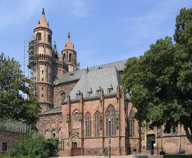
Worms Konkordası
Worms katedrali
Papalık ile Germen İmparatorluğu arasındaki “ Unvan Verme Kavgası “ uzun süre devam
edip, her iki tarafı da yıprattıktan sonra 1122 yılında, karşılıklı ödünler verilerek bir
uzlaşmaya vardı. Worms Konkordası’na göre piskoposların manevi görevini kilise, din dışı görevlerini ise siyasi otorite verecekti. Böylece Cluny tarikatının kurulmasından beri 200 yıl
süren kilisenin bağımsızlığı mücadelesi, Kilisenin amacına uygun çözülmüş oldu. Bu reform
kırsal kesimde, kentlerde olduğu kadar çabuk uygulanamadı. Ancak yavaş da olsa kırsal
kesim de reform yolunda yürümeye başladı.
Papaz ve piskoposların tayini konusundaki anlaşmazlığa son veren Worms konkordasından
sonra, papaların Alman ruhban sınıfı üzerindeki otoritesi arttı ve onlara imparatorluk
seçimlerine müdahale imkânı sağladı.
Bu tarihlere gelene kadar Papalık bürokrasiden yoksundu. XII. Yüzyılda, bürokrasisini diğer
devletlere benzer şekilde kurdu. Artık Papa hem evrensel kilisenin başı ve hem de İtalya’da
bir devletin başıydı. Kilisenin başı olarak çok güçlü olan Papa, devlet olarak çok güçsüzdü.
Otoritesini Roma kentine bile kabul ettiremiyordu. Gelirlerinin büyük çoğunluğu kilise
gelirleriydi. Papa kilise topraklarının tümünün denetimini elinde tutuyor ve ruhbandan genel
gelir vergisi alıyordu. Papalık devletinin gelirleri, ancak tüm Papalık gelirlerinin % 10’u
kadardı. Papalık devletinin giderleri gelirlerinden fazlaydı.
1122 yılında Artukoğlu İlgazi’nin yeğeni olan Artukoğlu Belek ve Şam egemeni Tuğ Tekin
(Tuğtekin) Haçlılarla savaşmak üzere bir ordu düzenlediler. Haçlılar savaşı kabul etmedi.
Dönüşte Belek, Urfa kontu Joscelin de Courtenay ve Birecik Senyörü Galeran de Puiset’i pusuya düşürerek esir aldı. Onları Harput kalesine hapsetti. Bu sefer sonrası hastalanan
Artukoğlu İlgazi, öldü (19 Kasım 1122). Ölümünden sonra oğullarından Timurtaş Mardin’e,
Süleyman Meyyafarikin’e, yeğeni Süleyman Halep’e hükümran olurken, diğer yeğeni
58
Nuruddevle Belek bin Behram Artıkoğlu ailesinin başı durumuna geldi. Belek daha önce
görüldüğü gibi topraklarını genişletip, I. Kılıç Arslan’ın dul eşi Ayşe Hatun ile evlenmişti. Bu
evlilik sonucu Malatya da Belek’in yönetimine geçmişti.
1122 yılında Mardin’de Necmeddin Gazi medresesi açıldı.
Kuzeyden Müslüman emirleri, güneyden Fatımîler Kudüs krallığını sıkıştırıyorlardı. Bu arada
4 yıl peş peşe ürün, çekirge ve farelerce telef edildi. Kudüs kralı İtalya’dan yardım istedi. 200
yelkenliden oluşan bir filo yardım için yola çıktı. Ama Kudüs’e gelmeden önce Doğu
Roma’nın hâkimiyetindeki Korfu’yu kuşattı. Bu sırada Belek, Kudüs kralı II. Baudouin’i esir aldı. Mısır Haçlı topraklarına saldırdı. Sonunda Haçlıların ısrarlı yardım çağrıları üzerine,
İtalyan donanması Korfu kuşatmasını kaldırarak, Kudüs’e yardıma geldi. Çoğunluğu
Venediklilerden oluşan filo Fatımîleri yenerek, Kudüs’ü bir anlamda kurtardı
Belek, Urfa kontunu, Bilecik senyörünü ve Kudüs Kralının üçünü birden Harput kalesine
hapsetmişti. Bellek uzaktayken, Haziran 1123 tarihinde, Harput’taki Ermenilerin yardımı ile
Harput iç kalesini ele geçirip, denetimleri altına aldılar. Bunun üzerine Harput’a gelen Bellek
iç kaleyi ele geçirerek, tutsakları önce Harran’a sonra Halep’e götürdü (1124). Haçlılarla
başarılı mücadeleler yapmış olan Artukoğlu Belek, Menbic kalesini kuşatmışken, kaleden
atılan bir ok ile yaralanıp, Mayıs 1124 tarihinde öldü.
Gürcü Kralı IV. Davit (II. Davit) karşısında, Ebul-Esvar, Ani kentini koruyamayacağını düşünüyordu. Kenti 60.000 dinar karşılığında Erzurum Saltuklu Emiri Ali’ye satmak istedi.
Kentin Ermeni halkı durumu Davit’e bildirince, Davit 60.000 Kıpçak atlısını Ani’ye
yolladı.1124 yılında Ani IV. Davit’in eline herhangi bir direnme olmadan geçti. Bu sırada
Ebul-Esvar’ın silahlı kuvvetleri büyük oğlu Fadlun’un emrinde, Büyük Selçuklu Hakanı
Sancar ile birlikte Horasan’daydı.
1125 yılında Sultan Sancar’ın yanından geri dönen Fadlun, Ani’yi kuşattı ve 1 yıl süren
kuşatmadan sonra Ani teslim oldu.
59
Halife Sultanlık Peşinde
Papalık ile Germen İmparatorluğu anlaşırken, Halife ile Selçuklu İmparatorluğunun arası
açılıyordu. Halife Müsterşid ordu toplamış, Aksungur’u ve Arap emirlerini buyruğuna almış, kılıç kuşanmıştı. Halife sadece ordu kurmakla kalmamış aynı zamanda bürokrasi de kurarak,
devlet yapılanmasına doğru adım atmıştı. Hille emir’i Dübeys bin Sadaka ile Halife
Müsterşid’in arası açıktı. Halife Dübeys’i kendi planları için tehlikeli görüyordu. Çatıştılar,
Dübeys’i bozguna uğradı ( Ocak 1123). Halife bu sefer Selçuklulardan yardım istememiş,
dünyevi olayları bizzat eline almıştı. Dübeys’i mağlup eden Halife ordusunda, halife
tarafından teçhiz edilen Bağdat halkı, Aksungur emrindeki Selçuklu kuvvetleri ve Halifenin
davetine uyan yerel Arap emirleri vardı. Halife Müsterşid ordusu harp meydanına doğru
ilerlerken, hükümdarlık sembolleri olan bayrak ve çetr (eş-şemse) açılmıştı. Artık Halife
hükümdarlık alametlerini kullanıyordu.
Bu sırada Nizamülmülk soyundan gelen Büyük Selçuklu veziri ölmüştü. Sencer’in yeni veziri
ise Nizamülmülk ailesine hasımdı. Bu yeni vezirin etkisi ile Sultan Sencer, Sultan Mahmut ve
Halifeden Nizamülmülk soyundan gelen vezirlerini değiştirmelerini istedi. Onlar da bu isteğe
uydular. Ancak, Nizamülmülk ailesi ülkede bir birlik sergiliyordu. Şimdi çeşitli güçler
arasındaki uyumu kim ve nasıl sağlayacaktı? Komutan Aksungur, Halifenin Sultan Mahmut’a
ricası üzerine Musul İktasına geri döndü, Bağdat komutanlığına Barankuş Zekevi atandı.
Aksungur gibi kuvvetli bir komutandan kurtulmak Halifenin işine geliyordu.
Bu sırada Dübeys Sultan Mahmut’un kardeşi Tuğrul ile ittifak yaptı. Tuğrul, Hamedan
çevresinde geniş bir bölgenin iktasına sahipti. Tuğrul ve Dübeys beraberce Bağdat üzerine
yürüme hazırlıklarına giriştiler. Ancak halife de boş durmuyordu. Bir taraftan asker
toplayarak, ordu teşkilatlandırıyordu. Diğer yandan Büyük Selçuklu Sultanı Sencer’in kızı ile
evlenerek, Selçuklular ile akrabalık ilişkisi kurmuş oluyordu. Tuğrul ve Dübeys beraberce
Bağdat üzerine yürüdüler (1125), ama Halife ordusunun başında onları karşılamaya çıkınca,
savaşmaktan çekinip, Sultan Sencer sığındılar. Halifenin yanında Bağdat şıhnesi Barankuş
Zekevi vardı.
Tuğrul Bey ve Dübeys, Sultan Sencer’e Halifenin “ bu ülkeler benim ülkelerim “ dediğini
anlatıp, Halife devlet kurup başına geçecek dediler. Bu sırada Selçuklu komutanı Barankuş,
Halifenin bürokratları ile çatışarak, Bağdat’ı terk etti. Barankuş, Tuğrul ve Dübeys’in
anlattıklarını teyit ettikten öte “ Yangın genişlemeden ateşi söndürmek için “ Sultanın
Bağdat’a gitmesini önerdi.
60
Bu sırada Irak Selçuklu Sultanı Mahmut, kendi için Halifeyi değil Tuğrul – Dübeys ikilisini
daha tehlikeli buluyordu. Halife Müsterşid ve Mahmut Büyük Selçuklu Sultanı Sencer’e karşı
ittifak yaparak, savaşma kararı verdiler. Bu kararı öğrenen Sencer, yeğenine şu mektubu
yazdı:
“ Sen benim sağ kolumsun. Halife ise bana ve sana oyun oynamaya kesin kararlıdır. Seninle
ittifak edip, beni temizledikten sonra sana dönecektir. Ona iltifat etme. Bilirsin ki benim
oğlum yoktur. Benimle savaş yaptın. Seni yendiğim halde kötülük yapmadım. Bana karşı
savaşmana neden olanları öldürdüm ve sana sultanlığı geri verdim. Seni veliaht yaptım, damat
edindim. İlk kızım ölünce bir başka kızımı verdim. Senin hakkında düşüncem, bir babanın
evladına olan düşüncesi gibidir. Bu nedenle sana düşen, ordunu alarak Bağdat’a gitmek,
Halifenin veziri İbn Sadaka’yı yakalamak, onların buyruğundaki Kürtleri öldürmek, vezirin
yaptırdığı askeri yapıları, savaş araç ve gereçlerini ele geçirmek ve Halifeye “ Ben senin
kılıcınım ve hizmetlinim, sen atalarının âdeti gereğince evine dön, ben senin haksızlığa ve
baskıya uğramana gerek bırakmam “ demektir. Bu dediklerimi yaparsan ne âlâ, aksi halde ben
şiddet kullanacağım. “
Bu ültimatom Mahmut üzerinde etkili oldu. Tekrar Büyük Sultan’a yaklaşarak, Bağdat
üzerine yürümeye karar verdi. Halife bunu duyunca, “ kıtlıktan yeni çıktık, Bağdat iki orduyu
besleyemez “ diyerek, Mahmut’un ordusu ile Bağdat’a gelmesini önlemeye çalıştı. Ama
başaramadı.
61
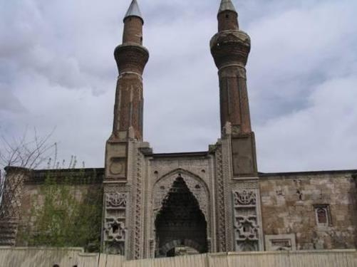
Anadolu’da Danışmend Hakimiyeti
Sivas Danışmendoğulları
1124 yılında İskoç tahtına I. David geçti. Tahtta 1153 yılına kadar kaldı. Onunla başlayarak İskoçya İngiltere’ye bağımlı hale geldi. Bu durum III. Alexandre’ın (1249 – 1286) İskoçya krallığı dönemine kadar devam etti.
Batı Avrupa yönetimle kilise arasındaki sorunları çözerken, Anadolu’nun fiili yönetimi
Danışmendoğlu Emir (Melik) Gazi’nin eline geçmişti. Anadolu Selçuklu tahtında Sultan Mesut, Danışmendoğullarının başında Emir (Melik) Gazi (1115 – 1134) vardı.
Danışmendoğlu Melik (Emir) Gazi, Sultan Mesut’un kayınpederiydi. Kılıç Arslan tarafından
alınan Malatya’nın yönetimi, ölümü üzerine oğlu Tuğrul Arslan’a bırakılmıştı. Sultan
Mesut’un diğer bir kardeşi olan Arap, Ankara ve Kastamonu yörelerinde emirlik yapıyordu.
Tuğrul Arslan ile Danışmendoğlu Emir Gazi’nin bir ara işbirliği yaptıklarını görmüştük. Ama
daha sonra Aralık 1124 tarihinde Emir Gazi Malatya’yı ele geçirdi. Tuğrul Arslan, Urfa
kontundan yardım istedi. Ama o sıralarda Haçlılar Halep’i kuşatmıştı, Tuğrul’un yardımına
kimse gidemedi.
Emir Arap, Sultan Mesut’un Emir (Melik) Gazi ile birlik olup, Malatya’nın Tuğrul
Arslan’dan cebren alınmış olmasına karşı çıktı. Emir Arap Sultan Mesut’un üzerine yürüdü.
Ama Anadolu Selçuklu Sultanı Mesut’un Danışmendoğulları ve Doğu Roma İmparatoru II.
İoannes’in askerleri ile takviye edilmiş ordusu 1126 yılında emir Arap’ı mağlup ettiler. Arap da Doğu Roma’ya sığındı ve orada yaşadı.
Selçukluların kazandığı Malazgirt zaferi kuzeydoğu yolunu açmıştı. Hatırlanacağı gibi bu
yolun dışında bir de Kilikya’dan geçen güneydoğu yolu vardı. Kuzeydoğu yolu açılınca, Türk
62
boyları akın akın, birbirini izleyen dalgalar halinde Anadolu içlerine akmaya başlamışlardı.
Daha önce sözünü ettiğimiz gibi bu baskının önünden evvela bazı Ermeni toplulukları
kaçarak, Kilikya’ya geldiler. Bunlar burada küçük Ermenistan’ı kurmaya çalıştılar. Ermeni
toplulukları gibi bazı Rum toplulukları da kaçmıştı. Rumlar, Pontus Eukseinos (Karadeniz)
bölgesine veya Akdeniz’de dağlık bölgelere sığındılar. Yerlerinde kalanların bir kısmı
kimliklerini korurken, bir kısmı Türkler ile karışarak birbiri içine girdiler. Daha önce
defalarca, örneğin Soğd’da gördüğümüz gibi, Türklerle karışmak çok kolay doğal bir
gelişimdi. Bu karışım sonunda Anadolıu halkı yeni bazı antropolojik özellikler kazandı.
Gelen, karışan ve yeni özellikler kazanan boylar önce kentlerin çevresindeki kırsal bölgelere
yayıldılar. Oğuzlar alıştıkları göçebe yaşamı bu kırsal alanlarda sürdürmeye devam
ediyorlardı. Zaten Anadolu’nun kırsal alanının Orta Asya ve İran’da bulundukları yerlerden
pek bir farkı da yoktu. Türkler kabile kabile gelip yerleştikçe ortaya da bir sürü beylik
çıkıyordu. Bunları zamanı geldikçe saymıştık: Saltuklular, Mengücükoğulları, Artukoğulları,
Danışmendoğulları gibi.
Bunların içinde Anadolu Selçukluları için en ürkütücü hasım Danışmendoğullarıydı.
Danışmendoğulları Anadolu tarihinde önemli bir rol oynamışlardır. Danişmentliler konusunda
XIII. Yüzyılda yazılmış olan ancak elimizde XIV. Yüzyıldaki bir kopyası kalan
Danışmendnâme önemli bir eserdir. Elimizdeki kopyada bazı değişiklikler yapılmış olsa da bu
eser önemli folklorik özellikler barındıran bir destandır. Danışmend Gazi Danışmendnâme ile
bir destan kahramanı olarak yaşadı. Burada efsaneler ile gerçek olaylar iç içe girmiş bir halde
anlatılmıştır. Horasan’da İran halk kahramanı Ebu Müslim, Anadolu’da Arap halk kahramanı Battal Gazi gibi Türk Danışmend Gazi de bu halk kahramanları geleneğine bağlanmıştır.
Danışmend Farsça “ bilge kişi “ demektir. Unvanı Şaman bir aileden geldiği için böyle
konmuş olabilir.
İran topraklarında ise 1124 yılında Hasan Sabah öldü. Bunun üzerine vezir Kaşani, tüm Batıni inançlıların nerede görülürse görülsünler öldürülmelerini emretti. Bunun üzerine her yerde
İsmaililer kılıçtan geçirilmeye başlandılar. Ama Hasan Sabah ölmüş, Haşhaşinler ölmemişti.
İntikamları müthiş oldu. Vezir Kaşani ve yüzlerce Sünni lider fedailer tarafından öldürüldü.
Sultan Sencer çok zor durumdaydı. Tam Haşhaşinler yok oldu derken, bu gidişle ülkede
yönetici kalmayacaktı. İsmaililer ile barış istedi. Böylece de Batınilik bir mezhep olarak
resmen tanındı.
Bu sıralarda hatırlanacağı gibi Venedik ağırlıklı İtalyan donanması gelmiş, Fatımîleri yenerek Kudüs Krallığını kurtarmıştı. 1124 Temmuz’unda Venedik, Kudüs Kralı adına Sur kentini ele geçirdi. Venedik bu başarısının karşılığı olarak Kudüs Krallığından pek çok ticari imtiyaz
aldı. Sur kentinin ve tarım arazisinin üçte biri Venedik’in oldu. Ayrıca bir sokak, bir meydan,
bir hamam, bir fırın, bir kilise vergiden muaf olarak verildi. Kudüs kenti içinde, büyük bir rant
sağlayan bir mahalle Venediklilerin oldu. Vergisiz ticaret hakkı tanındı.
Artukoğlu Belek ölünce yerine Hüsameddin Timurtaş geçmişti. Kudüs Kralı II. Baudouin de
hala Artukoğullarının elinde esirdi. Venedik Kudüs Krallığa 100 bin altın borç verdi, Artukoğlu’nun elinde esir olan Kral 100 bin altına serbest bırakıldı. Selçuklu Sultanı da bu
gelişmeyi bir başarı olarak görüp, Meyyafarikin’i Timurtaş’a ödül olarak verdi.
Çin’de ise Kitayları (Kitan) Sarı Irmağın kuzeyinde egemenlik kurmuş bir tarzda bırakmıştık.
Kitanların kurduğu hanedana Liao (Leao) hanedanı denmişti. Önceleri Uygurları yanlarına 63
alarak, onların deneyimlerinden istifade etmişlerdi. Sonra, 3 – 4 nesil sonra, tamamen
Çinlileştiler. 1125 yılına gelindiğinde, Mançurya’daki Cücenler karşısında başarısız olup,
Cücenlerin Pekin’i işgaline ses çıkaramadılar. Enteresan olan şudur, 1125 yılında Çin’den
kovulmuşlardı, normal olarak yok olmaları gerekiyordu, ama öyle olmadı.
Cücenler (Cürcen) Kitayları yok ederken, Tangut ülkesinin (Hsia) doğu kısmını ve Şensi
eyaletini de aldılar. Küçülen Hsia devleti 100 yıl kadar sonra Moğollar tarafından ortadan kaldırılacaktır. Böylece Kansu, Ordos ve Moğolistan’da Türk egemenliği ve bu egemenliğin
kalıntıları sona erdi. Yeni başlayan dönemi Moğol dönemi, Türklerin Orhun bölgesinin yeni
adı Moğolistan olacaktı. Şimdi Türkler Doğu Asya’yı yitirerek, Batı Asya’da egemenler
olarak ortaya çıkıyorlardı.
Doğu Roma İmparatoru İoannes Komnenos, Komnenos hanedanının en başarılı İmparatoru kabul edilir. Bu sırada Antakya ve Sicilya Normanların elinde bulunuyordu. 1082 yılında
Venedik’e verilen imtiyazlar İmparatorluğa çok pahalıya mal olmuştu. 2. İoannes Komnenos
bu imtiyazları kaldırmak istedi. Venedik’in çıkarlarını kaybetmeye hiç niyeti yoktu. Venedik,
Ege adalarına saldırdı. Doğu Roma bununla başa çıkamayacaktı. Bunu anlayan İmparator
Venedik ile Ona bazı ticari avantajlar sağlayan bir anlaşma imzaladı (1126).
Kralını 100 bin altın karşılığı kurtaran Kudüs bunun acısını çıkartmak istedi. Haçlılar Halep’i
kuşattılar. Bu sırada Büyük Selçuklular tarafından Musul İktası tekrar Aksungur Porsuki’ye
(Porsuk oğlu Aksungur) verilmişti. Haçlılar ve yandaşı Müslüman Emirlerce kuşatılan
Halep’in yardımına Artukoğlu Timurtaş gidemiyordu. Kuvvetli bir olasılık ile kuvvetleri
yetersizdi. Halep kenti, bunun üzerine yardımına Aksungur Porsuki’yi çağırdı. Porsuki
Halep’i kuşatan Haçlılar üzerine yürüdü. Halep, kapılarını Porsuki’ye açtı. Bu durumda
Haçlılar Halep’e saldırmaktan vazgeçtiler.
1126 yılında Aksungur Porsuki bir Haşhaşi tarafından öldürüldü. Aksungur Porsuki, Batıda
kent devleti şeklinde oluşmuş olan pek çok emirliği emrine alıp, düzene getiriyor, onları
merkez yönetime bağlı tutuyordu. Musul’un ikta sahibi olan kişisi, Suriye, Yukarı
Mezopotamya ve Güney Doğu Anadolu’daki siyasi anarşiyi giderecek, Haçlılardan gelen
tehlikeleri önleyecekti. Yani Porsuki’nin Büyük Selçuklu devleti Batı Ucunda yaptığı iş
önemliydi ve Sultanlar tarafından istenen bir hizmetti. Bu önemli görevi yapacak kişi olarak,
Aksungur Porsuki ölünce, yerine oğlu Mesut tayin oldu. Ancak Mesut da öldü. Aksungur’dan
boşalan yere Zengi tayin edildi. Bundan sonra Haçlılara karşı savaşacak olan Zengi ve oğlu
Nureddin olacaktı.
Çin kaynakları Çürcenleri (Çücen) kurt ve kaplandan daha kötü görürler, organizasyon yapılarını da en geri yapılanma sayarlar. Çinlilere göre Çürcen (Çücen) Hanı otlaklar ve
hayvanlarla çevrili bölgede 12 kaplan postu ile örtülü bir Tahtta yaşardı. Çürcen kadınları
şölenlerde seyircilerin gözüne ayna tutmaktan çok hoşlanırlardı.
1125 yılında Pekin’i alan Çürcenler (Çücenler), Kin hanedanını (Altın soy, Jin hanedanı) kurdular. Kendi soylarından gelenlerden bekledikleri tek şey savaşçı olmalarıydı. Kendi
soylarından vergi almazlardı. Topraklara el koyup, sonra onları köylülere kiralayarak, çok
zenginleştiler. Bu politika büyük arazi sahiplerini ve köylüleri karşılarına almalarına sebep
oldu. Karışıklıklar çıktı, ama Çürcenler varlıklarını sürdürdüler. Çürcenler Moğollar gelince
tekrar göçebe savaşçılığa dönecekler ama XVII. Yüzyılda “ Mançu “ adı altında tekrar ortaya çıkacak ve Çin’e hakim olacaklardır.
64
1115–1234 Çin
1126 yılında Sökmen Beyi İbrahim ölmüştü. Onun hükmettiği seneler içinde iç karışıklıklar
nedeni ile Sökmenler beyliği sürekli toprak kaybetmişti. Silvan, Bitlis, Erzen elden çıkmıştı.
İbrahim ölünce yerine kardeşi Ahmet hükümdar olmuş, fakat annesi İnanç Hatun yönetime
hâkim olmaya çalışmıştı. İnanç Hatunun bu çabaları, Sökmen Beyliğini daha da zayıf
düşürdü.
Anadolu’da Mesut’un kardeşi Melik Arap yenilmişti ama ezilmemişti. 1127 yılında
Ermenilerin de yardımını alarak Anadolu Selçuklu Sultanı Mesut ve Danışmendoğlu Emir
(Melik) Gazi ile savaşa tutuştu. Malatya civarında yenilerek Doğu Roma İmparatorluğuna sığındı. Bundan sonra Anadolu’nun fiili hâkimi haline Danışmendoğlu Emir Gazi geldi. Gazi,
Malatya’dan Batı Anadolu’ya kadar uzanan bölgede ve Karadeniz’de hâkimiyet kurmuştu.
Böylece Anadolu’nun siyasi hükümdarlığı Selçuklulardan Danışmendoğullarına geçmişti.
1126 yılında Cücenler Songların üzerine yürüyüp, başkentlerini aldılar. Song İmparatoru ve
yeni tahtan çekilmiş olan babası esir oldular. Böylece Kuzey Song devleti sona erdi. Bu
felakette imparatorun kardeşi kaçtı. Nankin’de tahta çıktı, merkezi Hang-chou olan “ Güney
Song “ hanedanını kurdu.
Güney ekonomik yönden gelişmişti. Büyük Çin Aileleri ( Kibar Seçkinler, Büyük Toprak
Lordu Bürokratlar) çoktan oralara yerleşmiş ve ülke yönetimine katılmışlardı. Kuzeyin elden
gitmesi kimseyi sarsmadı. Aileler toprak bile kaybetmemişlerdi.
65
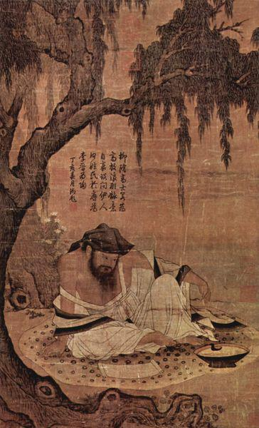
Herşey eskisi gibi gidiyordu. Sadece Cücenler hala savaşçıydılar ve diplomasiye önem
vermiyorlardı. Song ile Cücenler arasında savaşlar devam ediyordu. Bunların çoğu Çinlilerce
kazanılsa da kesin bir sonuç alınamıyordu.
11. yüzyıl Çin resmi
66
Irak Selçuklu Sultanı Mahmut
Bağdat’da
Irak Selçuklu Sultanı Mahmut, Bağdat’a ordusu ile gitmekten vazgeçmemişti. Bunun üzerine
Halife Bağdat önlerinde savaşa hazırlandı. Bağdat Halife kuvvetlerince işgal edilerek, oradaki
Selçuklu kuvvetleri kovuldu. Mahmut, daha sonra Musul Atabey devletini kuracak olan
Zengi’yi Bağdat kentine yolladı. Halifenin ordusu yenildi. Halife Müsterşid, Dicle nehrinin
batı kıyısına çekildi. Mahmut ordusu ile Dicle’nin doğusundaydı. Bağdat halkının büyük
çoğunluğu, Halifenin ardından nehrin batısına geçti.
Nehrin iki yakası arasındaki ordular arasında karşılıklı söz atmalar, söz düelloları oluyordu.
Halife tarafı, Selçuklu ordusunu dinsizlikle suçladı. Halifeye karşı çıkanların karısının boş
düşeceği haykırılıyordu. Selçuklu asker ve subayları iyice sinirlenerek, Halifenin Dicle’nin
doğu tarafında kalmış olan sarayını yağmaladılar. Halife sarayının yağmalanabileceğini hiç
düşünmediği için karılarını, cariyelerini her şeyini sarayda bırakmıştı. Selçuklu askerlerinin
sarayı yağmalayıp, kadınlara el atması, Bağdat’ta büyük infiale sebep oldu. Kaynaklara göre “
sanki dünya sarsılmıştı “. Bunun bir avuç serserinin işi olduğu düşünülemez. Zaten Bağdat
kenti değil, sadece Halifenin sarayı yağmalanmıştır. Ayrıca yağmaya subaylar da
katılmışlardır. Bu nedenle Sultan Mahmut bunu bilerek ve planlayarak yapmıştır.
Sadece Halifenin değil, Bağdat halkının da onuru ile oynanmıştı. Her yerden acı sesler,
feryatlar yükseliyordu. Bağdat halkı coşmuştu. Halife çadırından çıkarak, bando ile savaş
marşları çaldırmaya başladı. Ayyar kayıklarla nehri geçerek, Halife Sarayına saldırmış olan
bin kadar Selçuk askerini öldürdü. Karşı yağma ve tecavüz başladı. Şimdi çekilme sırası
Selçuklulardaydı. Selçuklu ordusu kent dışına çıktı.
Ayyar saldırısından sonra, 1127 yılı Ocak ayında, Halife Müsterşid ve askerleri Dicle nehrinin
doğusuna geçtiler. Kentin kapılarında günlerce savaş yapıldı. Savaşı kimse kazanamıyordu,
kazanacağı da yoktu. Sonunda Halife ile Sultan anlaşmaktan başka çare bulamadılar. Sultan
Mahmut bu anlaşma ile Halifenin Bağdat devletini resmen tanımış oldu. Böylece Papa şehir
devleti gibi Halife şehir devleti de kurulmuştu.
Bağdat içindeki bu savaş sırasında Prof. Köymen’e göre, servetler bloke edilmişti.
Darphaneye altın verilerek para bastırılabilinirdi. Darphaneye verilen bu paralara da el kondu.
Savaş bitince de, düşük altınlı para basılarak devalüasyon yapıldı. Malları bloke edilenler
mallarının karşılığını, darphaneye altın verenler paralarını düşük değerli paradan aldılar.
67
Almak istemeyenlere, zor kullanıldı. Bu savaş sırasında ticarette durdurulmuş, mallara el
konmuş, ticaret serbestîsi ancak savaştan sonra tekrar verilmiştir. Ticaret durduğunda,
Bağdat’ta fiyatlar astronomik olmuştu, ticaret serbest bırakılınca yeniden mallar çoğaldı,
fiyatlar düştü.
Irak Selçuklu Sultanı Mahmut, Zengi’yi Bağdat Selçuklu komutanı olarak bırakarak
Hamedan’a geri döndü. Bu sırada Sultan Sencer ile Mahmut’un arası tekrar açılmış olmalıdır.
Sencer, Mahmut’un kardeşi Tuğrul’a komutanlarından Karasungur’u atabey atayarak ve
kuzey Azerbaycan’da ikta vererek, Mahmut’u Tuğrul’un tehdidi altında tutmaya başladı.
Sencer Rey’e geldi ve Mahmut’u huzuruna çağırdı. Mahmut da boyun eğip huzura çıktı, yoksa isyan etmiş sayılacaktı. Mahmut’un kayıtsız şartsız ve hakkında verilecek bir hükmü
baştan kabul ederek amcasının davetine hemen uyması, Sultan Sencer’de yeğeni Sultan
Mahmut hakkında birikmiş olan tereddütleri yok etti. Sencer Rey’de Mahmut’a itibar etti ve
yanında taht hazırlatarak onu şereflendirdi.
Sultan Sencer Rey’e gelirken yanında Erran eyalet yönetimini verdiği Tuğrul ve kardeşi
Mesut’u hem Mahmut’un gönlünü hoş etmek ve hem de ona karşı alternatifi olduğunu
hatırlatmak için yanında getirmişti. Bu sırada Mahmut, veziri Ebulkasım Dergüzini’yi
tutuklatmıştı. Sultan Sencer, Dergüzini’yi serbest bıraktırıp, Mahmut ile evli kızına vezir tayin
etti. Daha sonra Mahmut Dergüzini’yi tekrar kendi veziri yapacaktır.
Mahmut’un Bağdat’a komutan atadığı Zengi, Bağdat’ı bırakıp, Suriye’ye gitmişti. Sencer,
Mahmut’tan Bağdat’a komutan olarak Zengi yerine Dübeys’i atamasını istedi. Sultan Sencer
çok istisnai bir durum olarak Batı işlerine fiilen karışıyordu. Zengi gibi çok ünlü ve önemli bir
komutanı da Bağdat görevinden alarak, Batıya yollaması ipleri elinde tuttuğunun
göstergesidir. Sultan Sencer bu siyaseti ile Batı ucunu garantiye alıyor, Halifeyi de eski bir
düşmanı ile aynı kafese kilitliyordu. Daha sonraları Zengi’nin ve onun mirasçılarının batıda
oynayacakları role bakınca, Sultan Sencer’in bu isteği ileri görüşlü bir buyruk olarak
algılanmalıdır.
Sultan Sencer’in müdahalesi ile, Sultan Mahmut, can düşmanını böylece Bağdat
komutanlığına getirilmesini kabul etmek zorunda kalmıştı. Bu kabulde, Dübeys’in, Sencer’in
kızı ve Mahmut’un karısı olan Selçuklu kraliçesi tarafından himaye edilmiş olmasının da rolü
vardır. 1127 yılında Aksungur’un oğlu İmadettin Zengi (1127 – 1147) Irak Selçuklu Sultanı
Mahmut tarafından Musul komutanlığına getirildi. Zengi, Halep’i alıp, Suriye ve Diyarbakır’a
doğru genişlemeye başladı. Diyarbakır bölgesi beyleri ve Artukoğulları, Zengi’nin vassalı oldular.
Sultan Sencer’in veziri Kaşani’ydi. Kaşani Dergüzini’nin Irak Selçuklu veziri olmasına
karşıydı. Dergüzini Haşhaşilerle anlaşarak Kaşani’yi öldürttü (Mart 1127). Sultan Sencer, bu
olay üzerine Alamut Haşhaşinlerine karşı harekete geçerek, söylentiye göre 10 binden fazla Batıni’yi öldürttü.
Şubat 1128 tarihinde Şam hâkimi Atabek Tuğtekin öldü. Yerine oğlu Böri geçti. Bundan
sonra Şam’da Böri hanedanı devri başlayacaktır.
68
Moğollar
Bozkır
Hunlardan beri Türk ve Moğol tarihleri sıkı sıkıya birbirine bağlıdırlar. Orta Asya’da Hun, Türk ve Moğol devletleri aynı etnik yapıya dayanmışlardır. Bu nedenle Moğol tarihini
bilmek, aynı zamanda Türk tarihini bilmeye ve anlayarak, boşlukları doldurmaya yarar.
Bundan sonra, önce Moğollar ve sonra Cengiz Han ile onun İmparatorluğu anlatılırken, olaylara Türk tarihini daha iyi anlayabilmek için bakmak gerekir.
Cengiz Hanın kabilesi, Türklerin meşhur Ötüken dağının hemen doğusunda Onan ve Kerülen
nehirleri arasında yaşayan, adlarına genel olarak “ Kara Tatarlar “ denen avcı ve göçebe boyların içinden bir boydur. Aile ataları Bodonçar’dır. O da Borcigin soyundan gelmektedir.
Efsaneleri Göktürk efsanesi olan Ergenekon efsanesinin aynıdır.
Sevinç Han’a yenilen İlhan Hakanın oğlu ve yeğeni kurtularak kaçıp, Ergenekon adlı vadiye
yerleşirler. Bu güzel ve verimli yerde 400 yıl kalıp çoğalırlar. Çıkmaya karar verdiklerinde
yol bulamadıklarından bir demirci, demirden dağı eriterek yol açar. Başlarında hanları
Bozkurt (börte çino), eriyen dağdan geçip, dışarı çıkarlar. Bozkurt bir vahşi geyik ile
evlenince, ortaya Cengiz Han’ın geldiği soy çıkar. Bu soyun daha yakın tarihli atası Alan-hoa
adlı kadındır. Alan-hoa’nın kocasından iki oğlu olur. Kocası öldükten sonra üç erkek çocuk
daha doğurur. Bunu şöyle açıklar: “ Her gece çadırın üst deliğinden giren parlak sarı bir adam,
karnımı okşuyordu ve onun parlak ışığı karnımdan içeri giriyordu. Dışarı çıktığında güneş ve
ay ışınları içinde, sarı bir köpek gibi sürünerek gidiyordu. Size sözle anlatmanın ne yararı var?
Anlayan için işaret açıktır. Bu üç oğlan, Tengri’nin (Gök) oğulları olmalıdır. “ Analarının
69
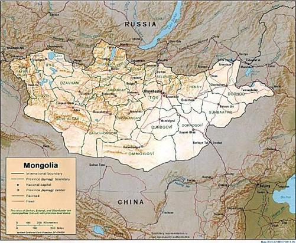
kocasız doğurduğu bu gök kökenli üç çocuk Begter, Belgetay ve Bodonçar’dır. En küçük olan
Bodonçar Cengiz soyunun atasıdır.
Anneleri ölünce Bodonçar’ın ağabeyleri bütün hayvanları alıp, Bodonçar’a bir şey
bırakmadılar. Hâlbuki en küçük oğlan hem Türklerde ve hem de Moğollarda baba evinin
sahibi (ecen) ve baba ocağının bekçisidir (odcigin). Baba ölünce babanın evi, çadırı, kadınları
vs. ona kalmalıydı. Ama dört kardeş, Bodonçar’ı abtal, budala ve soylarına yabancı sayarlar.
Onu kovarlar.
O da atı ile birlikte ölmeye veya yaşamaya gider. Kurtlar arasında yaşar, onlar tarafından
beslenir, kendi kurt olur. Gözleri mavi yani Gök rengidir. Bodonçar kurtlar arasında yaşarken,
nedamet getiren kardeşleri, onu arayıp bulur ve barışırlar. Bodonçar kardeşlerine sürgünde
gördüğü bir kabileyi tutsak almayı önerir. “ Büyüğü, küçüğü yok. Fenası, iyisi yok. Baş olanı,
ayak olanı yok. Hepsi eşit. “
Bodonçar, kardeşlerini bu kabileye saldırıp, onları esir etmeye razı eder. Kabileyi esir alırlar.
Bundan sonra kardeşler hayvan sürülerine ve uşaklara sahip olarak yaşamaya başlarlar. Bu
beş kardeşten ayrı soylar türer. Cengiz Han Bodonçar’ın soyundan türeyen Borcigin soyundandır. Borciginler, Onan ve Kerülen nehirleri arasındaki diğer kabilelere boyun
eğdirerek siyasi bir yapı kurarlar. Bu yapıya genel olarak “ Moğollar “ denir.
70
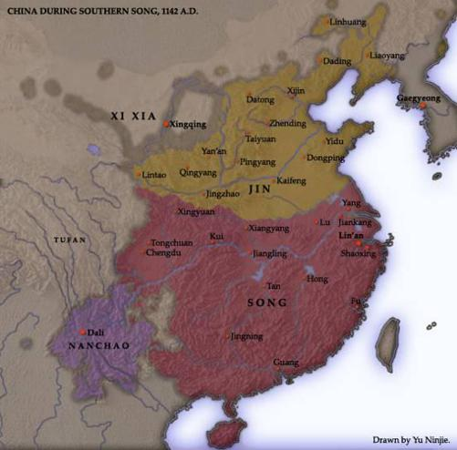
Kuzey Çin’de Kin hanedanını (Altın hanedanı) egemenken, Moğolların başında da Cengiz Han’ın dedesi Kabul Han vardı. Kabul Han Kin hanedanına vassal olarak yaşıyordu.
İmparatoru görmeye Pekin’e gittiğinde oburluğu ve içkiciliği ile İmparatoru şaşırttı.
Ziyafetlerde çeşitli sululuklar yaptı ise de imparator onu hoş gördü. Ama bir süre sonra
İmparatorla arası açılan Kabul Han tutsak edildi. Kabul Han Çinli subayları öldürerek
kaçmayı başardı. Ama artık Çin ile Moğollar arasında yıpratıcı savaşlar çıkmıştı.
71
Özel Yetki
Chartres Katedrali
1128 yılında Papa Honarius, gösterdikleri yararlılıklar nedeni ile Tapınak Şövalyelerinin, tüm Hıristiyan dünyada şubeler açarak, örgütlenmelerini genişletmelerine izin verdi. Peşinden,
Tapınak Şövalyelerinin herhangi bir dünyevi veya dini otoriteye tabi olmayacağını açıkladı.
Tapınak Şövalyeleri sadece Papaya karşı sorumluydular. Bu izin tabii ki Tapınak
Şövalyelerine büyük bir hareket alanı, güç ve rahatlık vermişti.
Tapınak Şövalyeleri Papadan yukarıdaki izni aldıktan sonra bir çeşit bankerliğe başladılar.
Kutsal Savaş için yola çıkan asker ve hacılar paralarını Tapınak Şövalyelerine teslim ediyor
ve karşılığında bir senet alıyorlardı. Gittikleri ülkede ise bu senet’i Tapınak Şövalyelerine
göstererek paralarını geri alıyorlardı. Paraları eksiksiz geri veriliyordu. Sistem iyi çalıştı.
Şövalyeler dürüsttüler. Bu durum Tapınak Şövalyelerine olan güveni iyice arttırdı.
Bir süre sonra Tapınak şövalyeleri ellerinde birikmiş olan parayı işletmeye başladılar. Para
işletimi geliri daha da arttırdı, sonunda Tapınak Şövalyelerinin elinde muazzam bir servet
birikti. Bu güç, Masonluk (duvarcı ustası lonca örgütlenmesi) gibi diğer meslek kuruluşlarının da Tapınak Şövalyelerinin şemsiyesi ve emri altına girmesine sebep oldu.
Papa hariç hiçbir yerel gücün kontrolünde değillerdi. Papaya karşı da sorumlulukları çok
sınırlıydı. Tapınak Şövalyeleri örgütü, bu sırada, çok güçlü bir kapitalist kurum haline
72
dönüşmüştü. Para kazanabilecekleri her yere el atmaya başladılar. Kiliseler ise topladıkları
bağış ve bir cins vergiyle iyi gelir kaynaklarına sahiptiler. Böylece Tapınak Şövalyeleri örgütü
kilise yapım ve işletimine el attı. Böylece yeni gelir kaynaklarına ve kendi mahkemelerine
sahip olacaklar ve kendi dini görüşlerini baskısız uygulayabilecekleri mekânlara
kavuşacaklardı.
Tapınak Şövalyeleri Kiliseler inşa ederken, yeni bir mimari anlayış oluştu. Bu yeni mimari
anlayışa “ Gotik “ dendi. Gotik mimarinin 1134 yılında “ Chartres Katedrali “ (Notre-Dame) nin kuzey kulesi yapılırken doğduğu yazılır.
1128 tarihli, Tapınak Şövalyeleri yeni üye kayıt tüzüğü ile ilgili bilgi şöyledir: (Bu bilgi
mason Teoman Bıyıkoğlu’nun “ Templierler ve Hürmasonlar “ adlı makalesinden alınmadır)
“Üstat, Mabet’te toplanan kardeşlere “Aziz kardeşlerim, sizlerden bazı kardeşlerim Bay X
adlı haricinin kardeşliğimize kabulünü ekseriyetle teklif etmiştir. Şayet, sizlerden biri bu
kişinin aramıza katılmasına bir engel durumunu biliyorsa şimdiden söylesin” diye sorar. Eğer,
kardeşlerden itiraz olmazsa, aday Mabedin bitişiğindeki hücreye alınır. Hücredeki adayı, en
tecrübeli üç kardeş ziyaret eder ve katılmasının getireceği zorluklar anlatıldıktan sonra yine de
katılmayı isteyip istemediği sorulur. Cevabı olumluysa, diğer sorulara geçilir: evli nişanlı olup
olmadığı, başka bir tarikata sözünün olup olmadığı, borcunun olup olmadığı, vücutça sağlıklı
olup olmadığı, köle olup olmadığı sorulur. Bu cevaplar da olumluysa, soruşturucu kardeşler
Mabede döner ve “Kendisine bütün zorluklar ve şartlarımız bildirildi. Tarikatımızın kölesi
olmakta ısrar etmektedir.” derler. Aday içeri alınmadan, aynı soru kendisine tekrar sorulur.
Fikrini değiştirmemişse Mabede alınır, diz çöktürülür ve aday kabulünü rica eder. Üstat,
adaya cevap olarak, “Kardeşim, sen bizden çok şey istiyorsun. Hâlbuki tarikatlarımızın sadece
dış kabuğunu görmektesin. Güzel atlara, iyi koşumlara, iyi yemeğe ve güzel elbiselere sahip
olmak istiyorsun. Fakat bizim şartlarımızın ne kadar ağır olduğunu bilebiliyor musun?” der ve
zorluklarını sıralar. Sonra konuşmasını “Mabedimize intisabını ne zenginlik, ne de asalet için
istememelisin.” diye sürdürür. Aday olumlu cevap verirse, yine dışarı çıkarılır.
Üstat, kardeşlere, aday hakkında söyleyecek bir sözlerinin olup olmadığını sorar. Aleyhte bir
söz söylenmezse, aday içeri alınıp diz çöktürülür. Eline İncil verilir. Kendisine evli veya
nişanlı olup olmadığı sorulur. Olumsuz cevap alınırsa, en yaşlı ve tecrübeli kardeşe, hariciye
sorulması unutulan bir sorunun olup olmadığı sorulur. Cevap olumluysa hariciye, “Bütün
kardeşlerine ve tarikata ölünceye kadar sadık kalacağına ve Mabedde yapılan konuşmaları hiç
bir şekilde dışarıya ifşa etmeyeceğine” dair yemin ettirilir. Üstat, yemini takiben yeni kardeşi
dudaklarından (diğer bir iddiaya göre de ensesinden ve göbeğinden) öper. Kendisine bir
şövalye elbisesi ve hiçbir şekilde çıkarmaması tembih edilen ipten örülmüş bir kemer verilir.”
Portekiz, bir bakıma Tapınakçılar tarafından kurulmuş bir ülkedir. 1128 yılından itibaren bu ülkede yerleşmeye başlayan ve etkin hale gelen tarikat, aynı zamanda ülkenin askeri ve ticari
gücünü de kontrol etmeye başladı. 1128'de Portekizli Teresa, Fonte Arcada bölgesini kendilerine hibe ederek şövalyelere her türlü kolaylığı sağladı. Buna karşılık Tapınakçılar da,
verdikleri destekle güçsüz ülkenin topraklarını genişletmesinde ona yardımcı oldular. Hatta
genişleme dönemi boyunca işgal edilen toprakların belirli bir kısmı da tarikata bırakıldı.
1128 yılında İngiltere Kralı I. Henry’nin kızı Matilda, Anjou kontu Geoffrey of Anjou ile
evlendi. Matilda küçük yaşda Kutsal Roma Germen İmparatoru V. Henry ile evlenmiş, çocukları olmamıştı. V. Henry ölünce Matilda İmparatoriçe olarak dul kalmıştı.
73
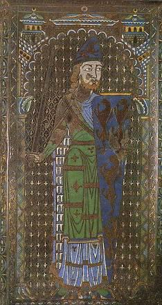
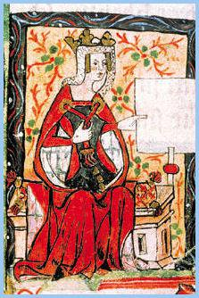
Geoffrey ise Fulk V of Anjou’nun en büyük oğluydu. Ona Katırtırnaklarının sarıçiçeklerine atfen Plantagenet takma adı verilmişti. Bu ad Latince Planta genista’dan gelmekteydi. İleride Geofrey’in oğlu II. Henry Plantagenet hanedanını kuracaktır. Plantagenetler Angevinler (Anjevin) olarak da adlandırılırlar.
Geoffrey of Anjou
İmparatoriçe Matilda
74
Sencer’in Emirleri
Bu sıralar, Macaristan’da iç huzursuzluk vardı. Doğu Roma İmparatoru İoannes de akrabalık ilişkileri nedeniyle, Macaristan’ın iç işlerine karışma hakkını kendisinde görüyordu. Bu sırada
Macar kralı II. Stefan’ın (1114 – 1131) kardeşi Almos Constantinopolis’e kaçtı. Almos’a başkentte özel ilgi gösterildi. Buna kızan Macar kralı, 1128 tarihinde hücum ederek,
Branişevo’yu zapt etti. Doğu Roma ordusu gelince geri çekilerek, barış yapmak zorunda kaldılar.
Anjou ve Maine kontu olan V. Geoffroy (1128 – 1151), Katırtırnağını kendine amblem olarak seçti ve topraklarında yetiştirtmeye başlattı. Bu nedenle ondan sonra bu ailenin soyadı, daha
önce bahsedildiği gibi “ Plantagenet “ oldu. V. Geoffroy’un ahfadı, İngiltere tahtına Plantagenet hanedanı olarak oturacaklardır. Plantagenetlerin İngiltere tahtında
hükümdarlıkları 1154 yılından 1399 yılına kadar sürecek, ondan sonra da hükümdarlık bu
hanedanın bir başka koluna geçecektir.
Anadolu Ahlat’ta, 1128 yılında, 10 aylık bir hükümdarlık sonrasında, Sökmen Beyi Ahmet
öldü. Yerine önceki Bey İbrahim’in oğlu Nasireddin Muhammed II. Sökmen geçti. Ama taht
iddiasından vazgeçmeyen İnanç Hatun, şimdi de torununu öldürme planları yapıyordu.
1129 yılı başında, Irak Selçuklu Sultanı Mahmut, Dübeys’i Halifeye bağışlatmak ve onu
Zengi’nin yerine Musul’a atamak için Bağdat’a gitti. Güneyde Hille bölgesine sahip olan
Dübeys, kuzeyde Musul bölgesini de alırsa, Halifenin kurmayı düşündüğü devlet doğmadan
ölecekti. Halife bu nedenle Dübeys’in tayinine şiddetle karşı çıktı. Halife Müsterşid ve Zengi, Mahmut’a ayrı ayrı 100 bin dinar vererek, onu bu fikrinden vazgeçirttiler. Mahmut da Bağdat
şıhneliğine ve Hille eyaleti yöneticiliğine komutan hadım Bihruz’u atadı. Dübeys’i de yanına
alarak Hamedan’a döndü. Mahmut’un bu davranışı, Sultan Sencer’in isteklerine karşıydı.
Ancak o sırada Sencer Türkmenistan’da meşgul olduğundan, Mahmut’un bu tasarrufuna
karışmadı.
Batı Karahanlı devletinin başında Sultan Sencer tarafından tayin edilmiş olan II. Muhammed Arslan Han vardı. Arslan Han, hayatının sonuna doğru felç geçirdiğinden oğlu Nasr Hanı naip
atamıştı. Bu sırada Semerkant ileri gelenleri aralarında anlaşarak, Nasr Hanı öldürdüler.
Arslan Han bu isyan üzerine hem Türkmenistan’daki oğlu Ahmet’i çağırdı ve hem de Sultan
Sencer’den yardım istedi. Ahmet Semerkant’a Sultan Sencer’den önce geldi ve isyanı bastırdı.
Bunun üzerine Arslan Han, Sultan Sencer’i çağırdığına pişman olmuştu. Sultan’a haber
yollayarak, gelmesine gerek kalmadığını bildirdi. Hâlbuki bu sırada Sultan Sencer
75
Semerkant’a yaklaşmıştı. Arslan Hanın haberine kızdı ama düşünmek için birkaç günlüğüne
ava çıktı. Avda, tam teçhizatlı 12 Karahanlı askeri yakalandı. Bunlar Arslan Hanın kendilerini
Sultanı öldürmekle görevlendirdiğini söylediler.
Sencer Semerkant kentini kuşattı. Sencer, Arslan Han hakkında şöyle diyordu:
“ Onu yoktan var ettim, tahta oturttum, rakiplerini Horasan’a götürdüm ve 12 yıl onu ordumla
destekledim. 17 yıl boyunca ülkesini kötü yönetti. Peygamber soyundan olanlara kötü
davrandı, eski köklü aileleri yok etti. Sadece şüphe üzerine halkı öldürttü, mallarını aldı. “
Karahanlı hükümdarı Arslan Han, Bozkırda yaşayan göçebe ve Şaman Türk kabileleri üzerine
yaptığı seferlerle tanınıyordu. Müslümanlar, kâfir Türkleri yola getirdiği için ona Gazi
unvanını vermişlerdi. 1130 yılında, Sencer Arslan Hanı tahtından indirdi. Hatırlanacağı gibi
Sultan Sencer, Arslan Hanın kızı Terken Hatun ile evliydi. Arslan Hanı Belh kentine kızı
Terken Hatunun yanına yolladı. Sultan Sencer, Arslan Hanın yerine peş peşe yeni Hanlar
atadı. Ama bu hanlar öldüğünden saltanatları kısa oluyordu.
1129 yılında Dübeys’i himayesine almış olan Sencer’in kızı ve Mahmut’un eşi olan kraliçe
öldü. Hatırlanacağı gibi Irak Selçuklu Sultanı Mahmut, Sultan Sencer’in kızı Mehmelek
Hatun ile evlenmişti. Çok geçmeden Mehmelek hatun 17 yaşında ölünce, annesi Emir Sitti
Hatun, öteki kızı Gevher Neseb ile Sultan Mahmut’u evlendirdi. Ölen Hatun Gevher Neseb
Hatundu. Bunu takiben Sultan Mahmut’ta hastalandı. Böylece Dübeys zaten kendini
emniyette hissetmediği Irak Selçuklularının elinden kaçabilmek için bir fırsat yakalamış oldu.
1129 yılında Dübeys yanına Sultan Mahmut’un küçük yaştaki oğlunu da alarak, Mahmut’un
elinden kurtulup Hille geri döndü. Dübeys, Hille’ye yanında rehinesi ile birlikte gitmişti.
Dübeys’in döndüğünü öğrenen Selçuklu komutanı Bihruz, savaşmadan Hille’i bıraktı. Halife
Bağdat’ı tehdit altında görünce Mahmut’tan yardım istedi. Mahmut, Dübeys’e kefil olan
Aksungur Ahmedili ve Kızıl adlı komutanları Dübeys üzerine yolladı. Bu sırada Halife de
kendi ordusu ile Dübeys’e karşı tedbir almıştı. Dübeys iki kuvvet arasında kalmıştı, ama esas
korktuğu Selçuklu ordusu idi. Halife Müsterşid ile anlaşmaya çalıştı. Onu tanıyacaktı, eski
yaptığı yağmaların karşılığını kat be kat ödeyecekti. Halife Dübeys ile anlaşabilirdi, ama
Bağdat halkı şiddetle karşı çıktı. Dübeys’i Bağdatlılar görmek bile istemiyorlardı. Dübeys
halife görüşmeleri bütün Ramazan ayı boyunca sürmüştü. Bu sırada Bağdat halkı elde silah
gece, gündüz nöbet tutmuştu. Bu hem Dübeys’in baskınından ne kadar korktuklarını ve hem
de Dübeys’e karşı olan azimlerini gösteren bir tutumdur. Bu sırada 3 bin atlı ile Hille gelen
Dübeys’in atlı sayısı 10 bine çıkmıştı. Bağdat’ın tersine ülkesinde Dübeys tutulan bir emirdi.
Üzerine yürüyen Selçuklu ordusu karşısında Dübeys’in yapacak pek bir şeyi kalmamıştı. Çöle
çekildi. Burada yıpratma savaşları verip, yağma akınları düzenledi. Gittikçe güçten
düşüyordu. Dübeys’in kaçmaktan başka yapacak bir şeyi kalmamıştı. O da Suriye’ye gitti,
orada iltica edebileceği bir beylik bulamadı. Bir ara Haçlılara iltica ettiyse de sonunda
Zengi’nin eline düştü.
Kilikya’nın dağlarında barınan Ermenileri, dağ kalelerinden düzlüğe indirmeye çalışan I.
Toros (Thoros) 1129 yılında öldü. Yerine oğlu Konstantin geçti. Ama saray içi bir darbe ile Konstantin öldürüldü yerine I. Toros’un kardeşi I. Leon tahta çıktı.
Anadolu’ya fiilen hâkim olmuş olan Danışmendoğlu Melik (Emir) Gazi’nin güneyde Haçlılarla çelişkisi büyümüştü. 1130 yılında Çukurova’daki Anazarba kalesi yakınında Emir (Melik) Gazi ile Haçlılar arasında yapılan savaşı Melik Gazi kazandı. Bu savaşta Haçlıların 76
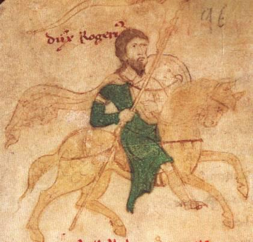
komutanı Antakya kontu II. Bohemond öldü. Melik Gazi, Haçlı komutanının kesik başını Halifeye yolladı. Danışmendoğlu Emir (Melik) Gazi, Kilikya üzerine yürümeye devam etti.
Kilikya Ermeni prensi I. Leon’u haraca bağladı. Ayrıca Ermeniler Türk bölgelerine akınlar da yapmayacaklardı. Bu anlaşma ile Kilikya Ermenileri ilk defa bir Türk devletine vergi
ödüyorlardı. Halife ve Sultan Sencer Haçlılara karşı başarısı nedeniyle Gazi’ye “ melik “
unvanını verdiler. Bu unvan ölümünden sonra oğlu Muhammed’e kaldı.
Danışmendoğlu Melik Gazi, Kilikya’dan çekildikten sonra Ermeni Prensi I. Leon verdiği sözleri tutmadı.
Güney
İtalya’daki
Norman kralı II. Roger
1130 yılında
Palermo’da taç giyip,
kral oldu. Norman
krallığından, Doğu
Roma İmparatorluğu
kadar, Alman
İmparatorluğu da
rahatsızdı.
İoannes
(Yuannis) Komnenos
ve Alman İmparatoru
III. Lothar Normanlara
karşı ittifak
oluşturdular. 1132
yılında, Kilikya’nın
Danışmend oğullarına
bağımlı olmasından
rahatsız olan Doğu
Roma
İmparatoru
Komnenos, Kilikya’ya
sefer yaparak, burada
II. Roger
egemenliği ele aldı.
Paflagonya’yı
(Paphlagonia) işgal
etti. Kastamonu’ya girdi. Hals’i de aşarak bu çevredeki Türkleri kendine bağımlı hale getirdi.
İmparatorun bu ilerleyişi büyük bir başarıydı. Ama kış olmadan Danışmendoğlu
Kastamonu’yu geri almıştı.
Alman İmparatoru Lothar’ın ölümünden sonra, Normanlara karşı yapılmış olan Doğu Roma
Alman ittifakı yeni Alman İmparatoru III. Konrad ile devam etti. Bu ittifaka Piza kenti de katıldı. Doğu Roma Piza kentine 1136 yılında bazı imtiyazlar tanıdı.
1130 ile 1135 yılları arasında Çin’den kovulan Kitanlar, inanılmaz bir işi başardılar. Yeniden göçebeliğe dönerek, tüm Orta Asya’yı aşıp, şimdiki Rus Türkistan’ına geldiler. Buranın daha
da kuzeydoğusunda Karahitaylar adlı bir Budist devlet kuracaklardı.
1133 yılında Sökmen Beyliğinde, ihtirasları ile devleti rahat bırakmayan İnanç Hatun, yay ve
kirişle boğdurularak, öldürüldü.
77
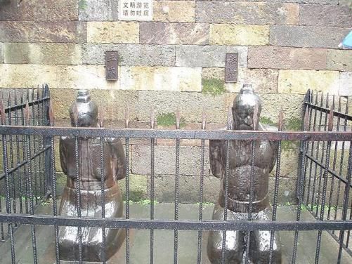
Halife daha fazla güç istiyor
Büyük Selçuklu Sultanı Sencer doğuda meşgul olduğundan kendisi batıya gelemiyordu. Ama
olup bitenlerden de memnun değildi. Irak Selçuklu Sultanı Mahmut’un kardeşi Mesut’u
batıya yolladı. 1131 yılı başında Mahmut Bağdat’taydı, Mesut’un geldiğini öğrenince,
Halifeden para ve asker yardımı istedi, ama Halife Müsterşid Mahmut’a yardım etmedi.
Bunun üzerine Hamedan’a dönen Mahmut burada, kardeşi Mesut’a 150 bin dinar ve asker vererek onunla anlaştı. Bu sırada Mahmut, Sultan Sencer’i de tanımadığını ilan ederek,
Halifeyi Bağdat’tan kovmak üzere Bağdat seferine hazırlanmaya başladı. Ama 1131 yılı
sonbaharında öldü. 1131 yılında Kudüs Kralı II. de Baudouin de ölmüştü.
Lady Wang and Qin Hui (Ch'in K'ui) heykelleri
Çin’de Songlarla Cücenler arasındaki savaşlar sonuca varmayıp, savaş alanlarına yakın
yerlerdeki ekili alanlara zarar veriyor ve bu bölgelerin köylüleri askere alındığından üretim
duruyordu. Tabii bu durum büyük arazi sahibi ailelerin (kibar seçkinler) işine hiç gelmiyordu.
Askeri gurubun karşısına Ch’in K’ui başkanlığında Büyük Çin Aileleri geçtiler. Büyük arazi sahipleri içinde en büyük araziler Ch’in K’ui’nin olanlardı. Cücenlerle ilişkiler konusunda iki
gurup arasında siyasi bir mücadele başladı. Askeri gurubun başında General Yo Fei vardı.
78
Irak Sultanı Mahmut, yumuşak huylu, tatlı sözlü, cömert, iyi ahlaklı, akıllı ve hoş görülü bir
Sultandı. Halkı soymaz, becerebildiği kadar başkalarının da halkın parasına göz koymasını
engellerdi. Devlet işlerini ve inceliklerini bilirdi. Kuşlara ve av köpeklerine meraklıydı.
Mahmut ölünce, oğlu Davut’un Atabeyi olan komutan Aksungur Ahmedili Davut’u Irak
Selçuklu Sultanı ilan etti. Davut’un Sultanlığını ne Halife ve ne de vezir Dergüzini kabul
etmiş değildi. Iran Selçuklu veziri Dergüzini yanında Irak Selçuklu komutanları olduğu halde,
Rey’e gidip, Sultan Sencer’i beklemeye başladı. Rey, Sultan Sencer tarafından Gevher adlı bir kölesine İkta olarak verilmişti. Dolayısı ile Rey’i Gevher yönetiyordu.
Bu sırada Mesut, Davut’un Sultanlığını tanımadığı için, Davut ve Aksungur ile Mesut
arasında savaş başladı. Aksungur’un kuvvetleri, Tebriz’deki Mesut’u kuşattı. Bir süre sonra
amca yeğen anlaşmış görüldüler. Kuşatma kalktı. Davut Azerbaycan’da kaldı. 1131 yılında
Mesut Hamedan’a giderek Halifeden sultanlığını tanımasını istedi. Halife Mesut’un
sultanlığını kabul etmedi. Şimdi Irak Selçukluları iyice karışmıştı. Taht kavgasına Mesut’un
kardeşi Tuğrul ve Muhammed Tapar’ın oğlu Şelçukşah’da karıştılar. Kâğıtlar karıldı, yeniden
dağıtıldı. Şimdi bir tarafta Mesut ve Selçukşah müttefikti, karşılarında Sultan Sencer’in
desteklediği Tuğrul vardı. Selçukşah’ın Atabeyi Karaca hak iddiacılarının arkasındaki güçtü.
Karaca yönetimindeki Mesut ve Selçukşah koalisyonu, Halife Müsterşid ile anlaştı. Irak’ın
yönetimi Halifeye bırakılarak Halife devleti hem resmen kabul ediliyor ve hem de büyüyordu.
Bu sırada Sultan Sencer Rey’e geldi. Sencer Hamedan’a yürüyüp aldı. Hedefi Bağdat’tı. 1132
yılı Mart ayında Atabey Karaca’nın gizli lider olduğu koalisyon ordusu, Sencer’in ordusunu
karşılamaya çıktı. Halife de ordusu ile koalisyon ordusuna katılmaya yöneldi.
Halife Bağdat’ı terk ederken, Bağdat halkı arkasından dua edip, sabahlara kadar Kuran
okudular. Bağdat geleceğini Halifeye bağlamıştı ve onunla bütünleşmişti.
Koalisyon kuvveti toplanmışken, Zengi ve Dübeys’in kuvvetleri Bağdat’a doğru harekete geçti. Bunun üzerine Halife koalisyon güçlerinden ayrıldı. Koalisyon ordusu ile Sencer’in
ordusu karşılaştılar. Sultan Sencer’in ordusu 100 bin süvariden oluşuyordu. Karaca
kumandasındaki ordu ise 30 bin kişiydi. Müttefik ordusu, Sultanın ordusunun merkezine,
dalgalar şeklinde peş peşe hücum etti. Karaca çabuk ve kesin sonuç almak istiyordu. Ancak
Tuğrul ve Harzemşah Atsız, Karaca kuvvetlerini sarınca, savaşın seyri değişti. Zafer Sultan Sencer’in olmuştu (Mayıs 1132). Karaca öldürüldü. Sultan Sencer, Mesut’u ise bağışlayarak,
Azerbaycan’da daha önce Mesut’a verdiği iktayı tekrar ona geri verdi.
Geri dönen Halife de Zengi ve Dübeys ile karşılaştı. Zengi’nin ordusu 7 bin, Halifeninki ise 2
bindi. Halife, Peygamberin hırkasını giyip, kılıcını çekip, hücuma kalktı. Halifeyi savaş
meydanında, Peygamber hırkası ile görünce Zengi’nin kuvvetleri dağılmış olmalıdır. Kazanan
Halife oldu. İki egemen kendi topraklarına döndüler. Dübeys’in eyaleti ve Hille’in yönetimi
Halifenin adamlarına geçti.
Sencer Irak Selçuklu Sultanlığına Tuğrul’u atamıştı. Hem kendine ve hem de Tuğrul’a vezir
olarak Dergüzini’yi seçti. Iraklı yazarlar Dergüzini’den soylu (asil) düşmanı, kan dökücü diye
çok yakınırlar. Sultan Sencer’in okuma yazma bilmediği için, mühürü basılı boş kâğıtları
vezirine verdiği söylenir. Böylece vezir Dergüzini boş kâğıtları doldurarak, Sencer’in
gıyabında ferman yazmaktadır. Dergüzini bu boş kâğıtlar sayesinde Ali kıran baş kesen
olmuştu. Enuşirvan şöyle yazar:
79
“ Bütün idari işlerinde, halka buyurmak ve yasaklamakta, kendi başına hareket ediyordu.
Sultan’dan (Irak Sultanı Tuğrul) çıkan fermanları yürürlüğe koymazdı. Kendisini Sencer’in
veziri olarak gösterir ve memleketi düzene sokmak için, Sultan Sencer’in onu Irak’ta bırakmış
olduğunu iddia ederdi… Fellah (köylü) aklıyla hareket etti, felah bulmadı. “
Kaynaklar, vezir Dergüzini’nin Haşhaşin desteği ile tüm düşmanlarını temizlediğini söylerler.
Bunlardan biri de Musul’da Haçlılara karşı savaşla görevlendirilmiş olan Aksungur el-
Porsuki’dir.
Sultan Sencer, Irak işlerini veziri Dergüzini’nin ellerine bırakıp, Halife meselesi ile de
uğraşamadan, acele Doğuya dönmüştü. Sencer’in Karahanlı Gazi Arslan Han yerine tayin
ettiği Han, itaatsizlik ediyordu. Sencer, Karahanlı tahtına II. Mahmut’u (1132 – 1141) atadı.
II. Mahmut, Gazi Arslan Hanın (II. Muhammed) oğluydu.
Bu sırada, Halife, Irak Selçuklu Sultanı Tuğrul’un taht üzerinde hak iddia eden diğer Selçuklu
Prensleri ile başının dertte olmasından faydalanarak, Tuğrul’u Bağdat’a sokmuyordu. Prens
Davut’un (daha önce Sultan Mahmut’un yerine tahta çıkarılmış olan prens Davut) Atabeyi
Aksungur 10 bin Kürtten oluşmuş atlı birliği ile Hamedan üzerine yürüdü. Temmuz 1132
yılında yapılan savaşı Davut ve Aksungur kaybettiler ve Bağdat’a kaçtılar. Aksungur’un
yanında savaşan komutanlardan ceza olarak iktaları ve servetleri alınarak, iyice
fakirleştirildiler. Fakirleşen komutanların siyasi bir geleceği kalmamıştı. Prens Davut’un
başkaldırması, Irak Selçuklu tahtına Tuğrul’un Sultan Sencer tarafından oturtulmasından 3 ay
sonra olmuştu. Bu Sultan Tuğrul’un ilk imtihanıydı.
Vezir Dergüzini, yüksek altın gramajlı para, düşük gramajlı para basarak ekonomi ile
oynuyor, halkı ve zenginleri bu oyunlarla soyarak, devlet hazinesini güçlendirmeye
çalışıyordu. Durmadan yeni vergiler koyuyor, satılmaz denen yerleri satıyordu. Vergi dışında
tüccarlardan para topluyor, insanların mallarını müsadere ediyordu. Dergüzini’nin ekonomik
olarak yaptıkları öyle bir aşamaya gelmişti ki, buna Sultan Tuğrul bile isyan ediyordu: “
Adımı lekeledin… Büyüklerin derisini yüzmekle yetinmedin, nihayet fakirin kanlarını sıkıp
çıkarmaya ve fakirlerin kanlarını tüketmeye başladın. “
Ama halk ezilirken, toplanan para ile ordu güçlenmişti. Tuğrul Azerbaycan üzerine
yürüyerek, tüm bu toprakları itaati altına aldı. Aksungur ve Davut gibi Mesut da Bağdat’a
gitti. Amcası Mesut’u Bağdat’ta karşılayan Davut, karşılama biçiminin gösterdiği gibi,
amcasının üstünlüğünü kabul etmiş ve Tuğrul’a karşı onunla birlik olmuştu (Ocak 1133).
Bu kadar insanın toplandığı Bağdat’ta, Halife ve Selçuklu prensleri arasında bir ittifak yapıldı.
Mesut, Halifenin tanıdığı meşru sultan oldu. Mesut, Davut ve Aksungur, Halifenin askerlerini
de alarak Azerbaycan’a Tuğrul ile savaşmaya gittiler. Bu ordu önce Tuğrul’un Atabeyi
Karasungur’u yendi, sonra Hamedan’a yürüdü, Hamedan önlerinde Tuğrul’un ordusunu da
mağlup etti ( Haziran 1133). Tuğrul Rey’e kaçtı, Mesut Irak Selçuklu devletinin tek sultanı
oldu. Bu yeni oluşumdan sonra Tuğrul veziri Dergüzini’yi, Mesut da kendi Atabeyi
Aksungur’u öldürterek, bağımsızlaştılar. Ancak, Selçuklu komutanları çok güçlüydüler.
Birinin tahakkümünden kurtulan, bir başkasının tahakkümüne giriyordu.
80
Sencer’in mektubu
Bu yeni durum karşısında, Halife Müsterşid artık kendini tam bir devlet başkanı gibi görüyordu. 1133 yılında ordusunun başında Musul egemeni Zengi’nin üzerine yürüdü. Bu
dönemde Halifenin ordusu, Selçuklu prenslerinin ordusundan çok daha güçlüydü. Selçuklu
prensleri Tuğrul ve Mesut’un 2 – 3 bin kişilik ordularına karşı, halifenin 12 bini atlı 30 bin
kişilik ordusu vardı. Türk kökenli komutanlarda kendi ufak orduları ile kim kuvvetli ise onun
yanına geçiyorlardı. Halife Zengi’nin üzerine yürürken yanında 30 civarında Türk komutan vardı. Musul kuşatıldı. Ancak Zengi direniyordu. 3 ay süren kuşatmadan sonra, Halife
Bağdat’a döndü. Halife baştan Zengi’nin kuşatmayı kaldırması için yaptığı teklifleri kabul
etmemişti. Ama Irak Selçuklu tahtına oturan Sultan Mesut’un, Aksungur Ahmedili’yi
öldürüp, Dübeys’e arka çıkması ve Halife ile yaptıkları anlaşmaya uymaması, Halifenin
Musul Kuşatmasını kaldırmasında etkidir. Bağdat’ta Halifeyi Sultan Sencer’in ilginç mektubu
bekliyordu.
Sencer, kendi için savaşan 200 bin kişiden bahsediyor, ona Cihan Padişahlığını Halife
Müsterşid’in değil Allah’ın verdiğini söylüyordu. Cihan padişahlığı Sultan Sencer’in aile
mirasıydı ve bunu Müsterşid’in ataları onaylamıştı. Halifenin devlet başkanı gibi davranması
yanlıştı, Sultan Sencer şöyle devam ediyordu:
“ Bugün halifelik, bizzat sefere çıkarak, İslam’ın işlerini bizzat kendi eline alıp fermanlar
düzenleyerek, Rum, Frenk, Türkistan ve Hindistan gazalarına, dinsizleri kahretmeye, rağbet
etme yolunu tutmuştur. Bu yanlış yoldur! Bu kararı düzeltmelidir. İşte onun naibi ve komutanı
olarak Sencer önünde durmaktadır. Halk dininin düşmanlarını Allah’ın yardımı ile
kahretmeye hazırdır. Allah’a göre doğrusu da budur. “
Halife hükümdarlık iddiasından vazgeçip, dini işlerle uğraşmalıdır. Halifenin Selçuklu
prensleri ile uğraşması da yanlıştır. Prenslerin işleri Sultan’a bırakılmalıdır. Sencer için bütün
prensler oğullarıdır. Baba onların rahat bir hayat yaşamalarını ve birbirlerini ezmemelerini
ister. Halife Mesut’u tutmakla Selçuklu ailesinin iç işlerine ve bizzat Sencer’in işlerine
karışmaktadır. Sencer için Tuğrul’un durumu diğer prensler içinde farklıdır. Tuğrul, yedi yıl
Sencer’in hizmet ve eğitiminde kalmıştır. Yedi yıl denenmiştir. Sencer Padişahlık
yeteneklerinin onda olduğunu görmüş ve Batı ülkelerinin idaresini, Sencer’in ve hanedanın
yolundan gitmesi kaydı ile Tuğrul’a vermiştir. Bu yolun kimse tarafından bozulmasına
müsaade edilmeyecektir. Hele başkalarınca bu bağlar koparılamaz ve yeminler ortadan
kaldırılamaz. Tuğrul’a her türlü saygıyı gösterenler, Sultan Sencer’in rızasını kazanırlar.
81
Tuğrul’a saygısızlık edenlerin düşmanı ise, doğrudan Sencer’dir. Sultan Halifeden, Sultan’ın
rızası olmadan ferman vermemesini istemektedir.
Sencer, burada baba oğul ilişkileri diyerek vasilik ilişkilerini kastetmektedir. Sencer ile
prensler arasındaki bağlar ve yeminler vasilik bağ ve yeminleridir. Bu ilişkiye üçüncü şahıslar
karışamazlar, karışmamalıdırlar.
Bu uzun bir fermandı ve Sultan Sencer halifeye geçmişi hatırlatarak, konu hakkında tüm
düşüncelerini iletmişti. Ferman ince bir diplomasi dili ile yazılmış olmasına rağmen, yer yer
sert ve tehditkârdır.
İmadeddin Zengi, üzerinden Halifenin baskısı kalkınca, çevresini sindirmeye devam etti.
Artukoğlu Timurtaş, Zengi ile başa çıkamayacağını anlayarak onu tabi olmayı kabul etti
(1233).
Gazne Sultanı Behramşah, 1119 ile 1134 yılları arasında sakin ve refah içinde yaşamıştı. 1134
yılından sonra Behramşah’ı Selçuklu Sultanı Sencer’in itaatinden çıkmış olarak görmekteyiz.
Artık yıllık 250 bin altın vergi ödenmemektedir. Ayrıca Sencer’e gelen bilgiye göre
Behramşah halka kötü ve haksız davranıyor, mallara el koyuyordu. Sencer, Gazne’yi hizaya
getirmek için hazırlık yapmaya başladı.
82
Halifenin Ölümü
Sencer’in Halife Müsterşid’e yazdığı bu uyarı mektubu Halifeyi etkilemedi. Bu sırada Tuğrul
ve Mesut arasındaki mücadele sürüyordu. Bu mücadeleye Davut’ta katıldı. Komutanlar ne
tarafa geçerse o taraf ağır basıyordu. Ama sonunda komutanlar Tuğrul’un yanına geçince,
1134 Haziranında Tuğrul Mesut’u yenerek Hamedan’ı ve tahtı ele geçirdi. Bağdat’a kaçan Mesut halifenin yardımları ile tekrar mücadeleye hazırlanmaya başladı.
Tuğrul ise yerini kuvvetlendirmek için Halifenin yanına geçmiş olan Türk komutanlara
mektuplar yazarak, geniş iktalar teklif ederek onları kazanmaya çalıştı. Halifenin yanındaki
komutanlar Tuğrul’a olumlu cevap verdiler. Ancak komutanların cevaplarından biri eline
geçen Halife, girişime öncülük eden, Türk komutanlardan Oğuz Beyi ele geçirip, hapsetti ve
tüm mallarına el koydu. Diğer komutanlar korkudan Mesut’a sığındılar. Halife komutanlarını
geri istedi. Mesut ise durup dururken ele geçirdiği bu silahlı gücü iade etmek istemedi.
Bu sırada Halifeden kopan komutan ve askerler, Bağdat’ta büyük bir yağmaya giriştiler.
Bunun üzerine Halife, Mesut ve askerlerini kent dışına kovdu. Şimdi Halife Mesut’u Bağdat’a
sokmamakta, Mesut Bağdat kapılarında yatmaktadır. Bu sırada Halife, bir taraftan da Mesut’u
kardeşi Tuğrul üzerine sefer yapmaya ikna etmeye çalışmaktadır. Bu sırada Tuğrul öldü
(Ekim 1134). Mesut Tuğrul’un komutanlarını kendi Sultanlığına ikna etmek için hemen
onların yanına gitti. Bazı komutanların karşı çıkmasına rağmen, sonuçta askerler Irak
Selçuklu Sultanlığına Mesut’u seçtiler. Mesut, Sencer’in onayı alınmaksızın, Sultan olmuştu.
Kendine vezir olarak Enuşirvan bin Halit’i, veliaht olarak yeğeni Davut’u atadı. Davut’u kızı
Gevher Hatunla evlendirdi.
Sencer, Mesut’un Sultanlığını kabul etmiş gibi görülüyordu. Sultan Sencer Selçuklu ailesinin
başıydı. Irak Selçuklu Sultanı olarak seçilecek kişiyi onun seçmesi gerekirdi. Hâlbuki o
prensler arasındaki mücadeleye karışmamış, ama sonunda taht Mesut’a kalınca da itiraz
etmemişti. Şimdi Sultan Mesut’a vassalı olarak buyruklar yolluyordu. Sultan Sencer, Sultan
Mesut’a bir mektup yollayarak, daha önce Tuğrul’un yanında savaşıp, şimdi Mesut’ biat eden
komutanların kendine teslim edilmesini vasisinden istedi. Sultan Sencer mektubunda, bu
komutanların daha önce Tuğrul’u sabote ettiklerini, şimdi Mesut’un yanında olmalarının
menfaatleri öyle gerektirdiği için olduğunu, bunlara güvenilemeyeceğini söylüyordu. Sultan
Sencer’in kendine teslimini istediği komutanlar arasında Porsukoğlu Porsuk, Kızıl ve
Barankuş gibi çok ünlü komutanlar da vardı. Bu mektup, ayrıca Sultan Sencer’in karışmasa da
Batıda gelişen olayları yakinen izlediğini de göstermektedir.
83
Sultan Mesut bu olayı askerlere bildirdi. Bu sırada Tuğrul’un Atabeyi Karasungur, Mesut’un
en güvendiği ve en önde gelen komutanı haline gelmişti. Bütün bunlar birleşince, bazı
komutanlar, Mesut’u terk ettiler. Bunlar Halifeyi, Mesut’un Bağdat’a saldıracağına dair ikna
etmeye çalışıyorlardı. Mesut’tan ayrılan komutanların yanında, Arap emir Dübeys’te vardı.
Halife, Dübeys nedeniyle, Mesut’tan ayrılan komutanlara hiç güven duymuyordu. Onlardan
Dübeys’in kendine teslim edilmesini istedi. Bunu duyan Dübeys, tekrar Mesut’un yanına
döndü. Dübeys’ten olup biteni öğrenen Mesut, komutanların üzerine yürüyünce, onlar da
halifenin yanına kaçtılar. Halifeye katılan komutan sayısı 22 idi.
Halife kuvvetlenmişti, Musul egemeni Zengi ve Basra bölgesi Selçuklu komutanı Bey-aba
Halifenin vassalları olmayı kabul ettiler. Mesut ordusunu topladı. Kendine bağlı komutanlara
daha Irak savaşını kazanmadan İktalarını dağıttı. Şimdi komutanlar kendi iktalarını kazanmak
için savaşacaklardı.
1135 yılında Halife-Mesut savaşı başladı. Mesut Dübeys komutasında 5 bin kişilik bir öncü
kuvvet yolladı. Bu kuvvet Halifenin öncülerini bozguna uğrattı. Bağdat’ta hutbeden Mesut’un
adı çıkarıldı, hutbe Sencer ve Davut adına okunmaya başlandı. Halife fıkıh bilginlerinden
fetva aldı:
“ Irak Selçuklu Sultanı azledilmelidir. Mesut’a karşı savaşmak meşru ve gereklidir. “
Halife, yanında ünlü Türk komutanlar Barankuş, Bazdar, Porsukoğlu Porsuk, Çavlı, Oğulbey,
Sungur, Kızıl vs olduğu halde, Mesut’un üzerine yürüdü. Ordular birbirine yaklaşırken, ikta
açık arttırması açılmış komutanlar saf değiştirir olmuşlardı. İkta dağıtmakta, Sultan Mesut’un
Halifeye ağır bastığı bellidir. Ordular karşı karşıya geldiklerinde, eski kuvvet dengeleri iyice
değişmişti. Şimdi 5 bin kişilik Halife ordusuna karşılık Irak Selçuklu Sultanının ordusu 15 bin
olmuştu. Savaş başlarken Zengi’nin yolladığı kuvvetler, Halife kuvvetlerine iltihak ederek,
sayısal dengesizliği nispeten giderir gibi oldular. Ancak Zengi’nin kendi gelmemişti. Savaşı
Mesut kazandı (Haziran 1135). Mesut “ malın askere, canın kendine ait olduğunu “ ilan
etmişti. Kimse öldürülmeyecek ama yağma serbest olacaktı. Halife Müsterşid esir edildi,
Halife ordusunun bütün ağırlıkları da yağmalandı. Bu savaş sırasında sadece 5 kişi, o da
yanlışlıkla ölmüştür. Bu da Türk komutanların ve askerlerin nasıl bir oyun oynadıklarını
gösterir.
Mesut, Halife Müsterşid’i yanında Hamedan’a götürdü. Halifenin esir düşmüş olması Bağdat
kenti hariç, diğer Müslüman kentlerde herhangi bir infiale sebep olmadı. Halife ile yaptığı
anlaşmada Halife devlet kurmak fikrinden vazgeçiyor, savaş tazminatı ödüyor, bir daha ordu
toplamıyor ve Bağdat’ta sarayından savaşmak için bir daha çıkmamayı kabul ediyordu.
Halifenin elinden ona ait olan hassa arazisi hariç tüm topraklar alındı.
Bu sırada başsız kalan Bağdat’ta huzursuzluk vardı. Basra Selçuklu komutanı Bey-aba Bağdat
Şıhnesi (komutanı) olarak atandı. Bağdat şıhnesi aslında Selçuklu temsilcisi olarak, sadece
Bağdat’ın değil tüm Irak-ı Arap’ın yetki ve sorumluluğunu taşıyordu. Bağdat’ta Bey-aba halk
ayaklanmasını bastırdı. Bey-aba, halka Bağdat surlarını yer yer yıktırdı.
Halife Irak Selçuklu Sultanı Mesut’un elinde esirken, Mesut Davut’a karşı bir sefer
düzenleyip, Azerbaycan’a kadar gitti. Bu sırada Büyük Selçuklu Sultanı Sencer’den bir
mektup geldi. Mektupta Sencer Mesut’a oğlum diye hitap ederek şunları söylüyordu. Hemen
Emirü’l-müminin (Halife) nin yanına vararak, yer öpmesini ve durmasını, affını, suçunu ve
cüretini bağışlamasını emrediyordu. Horasan’da 20 gündür devam eden semavi olaylar, fırtınalar, yıldırımlar ve zelzeleler olmaktaydı. Asker arasında karışıklık çıkmıştı. Büyük
84
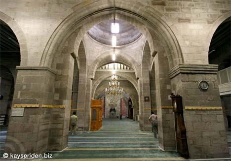
Sultan hem kendi, hem asker ve hem de halkın hayatı konusunda ciddi tereddütler duyuyordu.
Halk camilerde namaz kılmıyordu. Minberler kırılmış, hutbeler okunmaz olmuştu. Artık
olayları durdurmaya Büyük Sultanın gücü de yetmiyordu. Halife derhal serbest bırakılmalı,
tüm kötülüklerin kaynağı olan Dübeys de Halifeye teslim edilmeliydi.
Sultan Mesut bu mektuptan sonra, hemen Halifeden af diledi. Halife bir süre düşündükten
sonra af ettiğini bildirdi. Halifenin çadırı kuruldu. Sultan Mesut, Halifenin atının dizginini
tutarak, Halifeyi çadırına kadar getirdi. Sultan ve bütün komutanlar Halifenin ardından yayan
yürüyorlardı. Sultan Mesut, Halife çadırına yerleştikten sonra, Büyük Sultan Sencer’in isteği
doğrultusunda Dübeys’i Halifeye teslim etti. Dübeys Halifeye teslim edilmemesi için ağlıyor,
yalvarıyordu. Halife bundan sonra Bağdat’a dönme hazırlıklarına başladı.
Bu sırada kalabalık bir elçilik heyetinin geldiği haberi gelince herkes gelen heyeti karşılamaya
ordugâh dışına çıktı. Ordugâhta Halife ile birkaç muhafızı kaldılar. Bu fırsattan istifade
ederek Haşhaşiler Halifenin çadırını basıp, muhafızları öldürdüler. Halifenin de burnu,
kulakları ve dili kesilerek işkence ile öldürüldü (Ağustos 1135). Ordu geri döndüğünde 7
Haşhaşi (Haşhaşin) öldürüldü ama 10 tanesi kaçmayı başardı. Halife Müsterşid 17 yıl 8 ay halifelik yaptıktan sonra 45 yaşında öldürülmüştü. Sağ kalsaydı, Selçukluların başına daha
çok işler açardı. Halifenin ölümünden her ne kadar Haşhaşinler sorumlu tutulmuş olsa da katli
Sencer ve Mesut düzenlemiş olabilirler. Halifeden kısa bir süre sonra Dübeys de öldürüldü.
Rivayete göre Sultan Mesut, Halifenin ölümü nedeniyle kendi üzerinde oluşan şüpheleri
dağıtmak için Dübeys’i öldürtmüştü.
Halife Müsterşid’in öldürülmesi Halife sorununu tam olarak çözmedi. Yerine oğlu Raşit
geçmişti. Raşit öç almak için kıvranıyordu.
1135 yılında Kayseri’de Ulu Cami yapımına başlandı.
Kayseri Ulucami
85
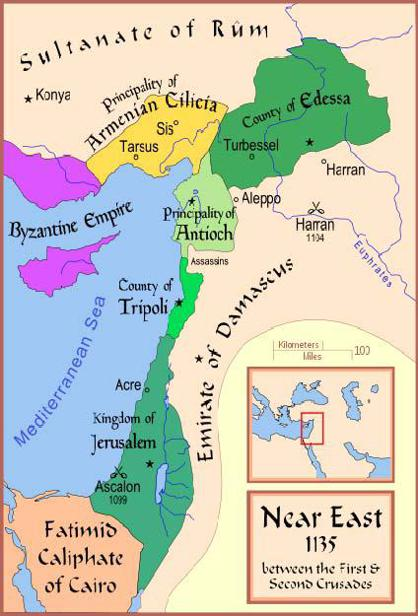
Kim Halife olacak
1135 yılında Anadolu’ya sefere çıkan İoannes Çankırı ve Kastamonu kentlerini ele geçirdi.
İmparator Constantinopolis’e dönünce Danişment beyliği bu kentleri hemen geri aldı. Bu
sırada Danışmendoğullarında Emir Gazi ölmüş yerine oğlu Mehmet geçmişti. Mehmet Melik unvanını hiç kimseye danışmadan kendi kendine almıştı. Danışmendoğlu Mehmet ve Anadolu
Selçuklu Sultanı Mesut, aralarındaki anlaşmazlıkları bir yana bırakarak, iş birliği yapıp,
İoannes’e karşı mücadeleye giriştiler. Türkler tekrar Çankırı ve yörelerine sahip olmuşlardı
(1135). Doğu Roma ile Türkler arasında Çankırı ve çevresindeki mücadele sürerken, bu
çevredeki emirler ve valiler de Çankırı’yı ele geçirene tabi oluyorlardı.
86
Normanlı Fatih Guillaumme İngiliz tahtına geçtikten sonra tam bir feodal devlet kurmuştu.
Fatih Guillaumme’dan sonra tahta geçen oğulları feodal prensliklere göz açtırmadılar.
İngiltere’deki Norman aristokrasisi inletiyordu. 1135 yılında İngiltere kralı I. Henry öldü.
Peşinden de taht kavgaları başladı. İngiliz Norman aristokrasisi bunu fırsat bilerek, kıta
Avrupa’sında olduğu gibi özerklik kazanmak istediler. Kralın ikametgâhının bir kısmına el
koydular, şatoları ele geçirdiler, kendilerine kaleler yaptılar, güç kazanmaya çalıştılar.
Sandılar ki monarşi işin peşini bırakır. Bu iç savaş ve huzursuzluk dönemi 1154 yılına kadar
sürdü.
1136 yılına gelindiğinde Büyük Selçuklu Sultanı Sencer, din işlerinden başka bir işe
karışmayacak, ordu toplamayacak bir halife arıyordu. Aslında Abbasi sarayında Harun bin el-
Muktefi adında yaşlı ve din işlerinden başka bir işe karışmayacak yapıda, tüm Abbasi ailesinin hürmet ettiği biri vardı. Ancak veliaht Ebu Cafer Mansur, er-Raşit Billâh lakabı ile halife oldu. Irak Selçuklu Sultanı Mesut, Raşit’ten babası ile yaptığı anlaşma gereği 400 bin
altın para istedi. Raşit “ hazinede hiç para olmadığını, bütün paranın Müsterşid’in yanında
bulunduğunu ve savaş sırasında yağmalandığını “ söyledi. Raşit kendisine saldırılacağı
korkusu ile hemen ordu kurmaya girişti. Raşit’in çabaları ile içlerinde Musul egemeni
Zengi’nin de bulunduğu çok sayıda komutan Bağdat’ta tutulacak yolu konuşmak üzere toplandılar. Melik Davut’ta Bağdat’a ilk gelenlerden biriydi. Bu sırada Sultan Sencer Doğuda
Gazne Sultanı Behramşah ile uğraşıyordu.
Behramşah vergisini ödememişti, Sencer da onun üzerine yürümüştü. Gazne Sultanı
Behramşah, Büyük Selçuklu devleti vassalıydı. Behramşah hakkında Sultan Sencer’e gelen
son bilgiler, artık onun kendini Selçuklu vassalı saymadığı, bu nedenle yılda 250 bin dinar
olan yıllık vergiyi de ödemediği ve halka zulüm yaptığı yönündeydi. Sultan Sencer Ordusu ile
Gazne üzerine yürüdü. 1135–1136 kışı bastırmıştı, yerlerde kar vardı. Atlara verilecek saman
bile bulunamıyordu. Saman altından pahalı olmuştu. Asker geri dönmek istemesine rağmen,
Sultan Sencer orduyu sefere devam ettirtti. Gazne önlerine gelene kadar hiçbir mukavemet ile
karşılaşmadılar. Burada, Gazne Sultanı Behramşah, Sultan Sencer’den af dilemek istedi. Af
dileme merasimine katılırken, Sencer’in ihtişamını görünce birden korktu. Behramşah, zaten,
Sultan Sencer’in kendine ceza vereceğinden korkuyor, Sultanın huzuruna korka korka
gidiyordu. Birden Sultanın kudretini tekrar karşısında görünce, kaçtı.
Büyük Selçuklu Sultanı Sencer, Gazne kentine herhangi bir mukavemet görmeden girdi.
Ülkenin iç kısımlarına kaçmış olan Behramşah da, Sultana haberciler ve hediyeler yollayarak
af diliyordu. Korkup, kaçtığını ama Sultana tabii olduğunu anlatmaya çalışıyordu. Sonunda
Sultan Sencer, Behramşah’ın samimiyetine inandı. Gazne tahtını vassalı olarak tekrar ona
bırakarak, 1136 yılında Horasan’a döndü.
1130 yılındaki birinci seferden sonra, bu ikinci Gazne seferinde Sultan Sencer, Gazne
devletine kişisel olarak el koymuş, mali kaynaklarını ve servetini ele geçirmiş ama Gazne
hükümdarına bir ceza kesmemiştir. Yani ne hükümdarı cezalandırmış ve ne de değiştirmiştir.
Irak’ta ise kumandanlar Bağdat’ta toplandıktan sonra, Melik Davut Bağdat şıhneliğine
Barankuş Bazdar’ı atadı. Halife Raşit de kent surlarını tamir ettiriyordu. Bağdat’ta artık hutbe
de Davut adına okunuyordu. Toplanan emirler aralarında yaptıkları toplantılar sonunda,
Sultan Mesut ile savaşılmasına ama bunun kent surları arkasından yapılmasına karar verdiler.
Bu toplantıyı haber alan Sultan Mesut’ta hemen ordusu ile Bağdat’a gelip, kenti kuşatmıştı.
87
Kuşatma 51 gün sürdü, Sultan Mesut hiçbir başarı kazanamadı. Sonunda Mesut Hamedan’a
dönmek üzere Bağdat’tan ayrıldı.
Kuşatma sırasında Sultan Mesut, komutanlarla ilişkiler kurmaya çalışıyordu. Halife Raşit,
Sultan Mesut ile işbirliğine gideceğinden korktuğu devlet ileri gelenleri ile saray komutanı
Cemalüd-devle İkbal’i hapsettirdi. Sebep, Halifeden gizli Sultan Mesut ile haberleştikleri
iddiasıydı. Sebep ne olursa olsun, bu hareket diğer komutanları ürküttü ve korkuttu. Otorite ve
disiplin komutanların hiç istemedikleri bir şeydi. Bu açıdan, askerler arasında büyük bir
dayanışma vardı.
Ordu galeyana geldi. Zengi İkbal’in serbest bırakılmasını istedi. Barankuş bunu hemen
destekledi. Halifeden ses çıkmayınca Barankuş’un askerleri Bağdat surlarını yıkmaya
başladılar. Bağdat kenti yağmalanmaktan ancak kurtuldu. Fiyatlar arttı. Zengi, Halifenin
sarayına giderek, İkbal’i eli ile aldı. Peşinden Zengi, İkbal’in paralarını ve servetini halifeden
geri istedi.
Bu sırada Irak Selçuklu Sultanı Mesut da boş durmuyor, çeşitli vaatler yaparak,
Bağdat’takileri dağıtmaya çalışıyordu. Melik Davut Bağdat’tan ayrılarak Ağustos 1136 da
topraklarına döndü. Bütün Suriye vaat edilen Zengi, Bağdat’tan ayrıldı, güçsüz kalan Raşit de
onunla gitmek zorunda kaldı. Bundan sonra Bağdat’a gelen Mesut 1136 yılı yazında, el-
Müktefi’yi, Muktefi Liemrillah (1136 – 1160) adıyla Halife yaptı. Bağdat halkı Mesut’un gelişinden ve adaletinden memnun kalmıştı. Halife Bağdat’tan ayrılmadan önce hem Ayyar
ve hem de müttefik askerleri Bağdat halkını durmadan soyuyorlardı. Sultan Mesut’un gelişi
ile birlikte bütün anarşi bitti.
Muktefi Liemrillah Halife olunca, onun güç sahibi olmasını önlemek için, bütün serveti
elinden alındı. Halifeye sadece dört at ile Dicle’den su taşımak için üç katır bırakıldı.
Halifenin hazinesi, iktası kalmamıştı. Halife vezirinin kim olacağını Sencer söyledi, Mesut
atadı. Vezir Dergüzini soyundan biriydi.
88


Sufilikte Gelişme
Bu sırada Zengi’nin yanında bulunan Raşit, halifelik iddiasından vazgeçmiş değildi. Ama Sencer ve Mesut’un baskıları sonucu Zengi Raşit’e yardım edemiyordu. Raşit’in halifelik
iddiasını Fars Atabeyi Mengübars’ın yardımları ile sürdürebiliyordu. Ancak Irak Sultanı
Mesut’un Atabeyi Karasungur, Yanında Barankuş, Bazdar, Sungur, Çavlı gibi komutanlar
olduğu halde Mengübars’ın üzerine yürüyüp, onu bozguna uğrattı. Mengübars ölmüştü.
Mengübars’ın mağlubiyetinden sonra, Mesut’un ordusu yağmaya dalmışken, bir karşı saldırı
yapan Mengübars’ın komutanı Boz-aba, Mesut ve Karasungur’un kuvvetlerini kaçırttı. Boz-
aba ve Raşit, Azerbaycan’a Davut’un yanına gittiler. Daha sonra Davut’tan da ayrılan Raşit,
1138 yılında öldürüldü. Kendi askerleri mi, Sultan Mesut’un adamları mı yoksa Haşhaşiler
mi, kimin öldürdüğü bilinmemektedir.
Kilikya Ermeni Prensi Leon, Haçlılardan yardım görüyordu. Doğu Roma ordusunun
Balkanlar’da ve Anadolu’da meşgul olmasından yararlanan Leon 1129 yılından itibaren,
bölgenin önemli kentlerine hâkim olmaya başladı. 1136 ve 1137 yıllarında Haçlılar ile
Ermeniler birbirleri ile savaşıyorlardı. Antakya hâkimi Raymond, Ermeni prensi I. Leon ile
yaptığı savaşı kaybetmişti. Ancak, görüşmek için Antakya’ya çağırdığı Leon’u tutuklattı.
Leon 2 ay hapis yattıktan sonra, 60.000 dahekan fidye ödemeyi ve Misis ile Anazarba
kentlerini Raymond’a vermeyi kabul edip, serbest kaldı. Leon hapis iken 3 oğlu birbiri ile
mücadeleye başlamışlardı. Leon esaretten kurtulduktan sonra, yokluğunda Haçlıların elline
geçen kalelerini geri almaya başladı. Haçlılar da Kudüs Kralını yardıma çağırdılar. I. Leon ve
Kudüs Haçlı kuvvetleri çarpışırken, Doğu Roma İmparatorunun Kilikya’ya sefer yaptığı
haberi geldi. Ermeni ve Haçlılar hemen aralarında barış yaptılar.
89
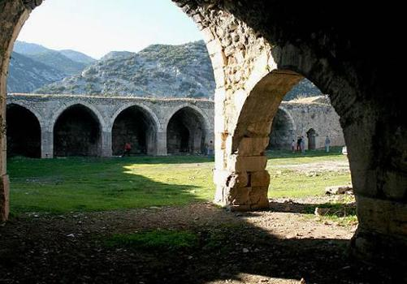
1136 yılında, 1 yıl önce Çankırı’yı Doğu Roma’nın elinden almış olan Danışmendoğlu
Mehmet, Haçlılara karşı hareket ederek, Maraş üzerine yürüdü. Bütün bu hareketlenmelerden
istifade etmek isteyen Doğu Roma İmparatoru İoannes Komnenos da 1137 yılında Kilikya
üzerine sefere çıktı. Tarsus, Adana, Anazarba ve Mamistra’yı aldı. Leon başlangıçta kaçtı ama bir yıl içinde yakalanarak tutsak oldu. İmparator Kilikya’nın peşinden Ağustos 1137 yılında
Antakya önlerine geldi. Bizans İmparatorunun Kilikya’ya geldiğini öğrenen ve Maraş’ı
kuşatmış olan Danışmendoğlu Mehmet Bey’de kuşatmayı kaldırarak, geri çekildi.
Büyük Selçuklu devleti artık en azından Batıda iyice zayıflamıştı. Bundan sonra kentler ağır
ağır bir terör rejiminin içine düştüler. Terörü yaratan da ayyarun örgütleriydi. Ayyarun eski
fityan örgütlerine eşkıyalık yapmaya başlayınca hakaret etmek için verilen bir addı. Ayyarun
resmi kolluk güçlerini tanımıyor ve hatta onları kendi karşıtı sayıp, öldürüyordu. Aralarındaki
anlaşmazlıkları şeriat mahkemelerinde değil, kendilerinin “ musalaha “ adını verdikleri halk
mahkemelerinde çözüyorlardı. Halk mahkemesi kararına da uyuyorlardı. Zenginlerden zorla
para toplayıp, fakirlere dağıtmak gibi eylemlere giriştiler.
Ayyarun’un korkutucu bir hale geldiği dönemde sufi hareketi de gelişmişti. Sufiler tarikatlar
halinde örgütlenmeye başladılar. Ortaya dervişlik çıktı. Bu sırada fityan örgütleri ile Sufiler
arasında bir yakınlaşma görülmeye başlandı. Bazı Sufiler fütuvvet örgütlerinin yiğitlik, cömertlik, başkalarına yardım etme gibi ahlaki değerlerini benimsediler. Fütuvvetnameler
yazmaya başladılar. Fütuuvvetnamelerde bu değerler işlendi ve sistematize edildi. Böylece
Fütuvvet örgütleri de kuramsal bir temel kazanmış oluyordu.
Fütuvvet örgütleri ile Sufilik arasında bu ideolojik yakınlaşmanın yanı sıra, örgütlenme
biçiminde de karşılıklı etkileşim yaşandı. Bazı fityan örgütleri derviş tarikatları şeklinde
örgütlendi. Böylece eskiden dinsel ve siyasal eylemlerin dışında kalan fityan örgütleri, dini ve
siyasi mücadeleler de taraf olmaya başladı.
1136 yılında Antalya civarında Kırkgöz hanı yapıldı (Antalya’nın Hanları).
Kırkgöz hanı
90
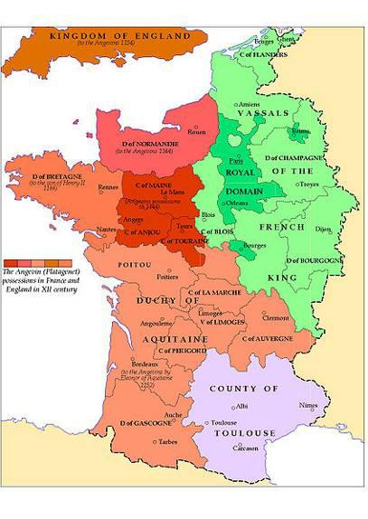
Akitanyalılar
1137 yılında Akitanyalı
ile evlenmesi sonucunda
Poitiers sarayı İle-de-
France’a taşınmıştı.
Alienor (1122 veya
1124 – 1204), Akitanya
(Güney Fransa)
düşesidir. XII. Yüzyılda
Fransa ve İngiltere
krallıkları arasında tayin
edici bir rolü olmuştur.
Hem Fransa kralı VII.
Louis (1137 – 1180) ve
hem de İngiltere kralı II.
Henri (1154 – 1189) ile
evlenmiştir. Çeyizini
önce bir krallığa sonra
diğerine vererek, iki
krallık arasındaki güç
dengesini değiştirmiştir.
Akitanyalı Alienor,
Akitanya dükü
Akitanya 1154'e doğru
kızıdır. Alienor, Oc
dilinde Diğer Aenor demektir. Döneminde yaşamış olan bütün asil kadınlar gibi çok özel bir
eğitim aldı. Latince okuyup, yazıyordu, müzik ve edebiyat eğitimi görmüştü, ata binebiliyor
ve avlanabiliyordu. Erkek kardeşinin 1130 yılında ölümü üzerine Akitanya topraklarına miras
olarak sahip oldu. 14 yaşında iken 1136 yılında, Akitanya senyörleri ona bağlılıklarını
bildirerek, onu Akitanya düşesi seçtiler. Babası 38 yaşında iken 1137 yılında öldü. Babasının
ölümünden sonra Alienor, VI. Louis’nin gelecekte mirasçısı olacak olan VII. Louis ile evlendi. Evlendiği sırada kocası 9 yaşındaydı. Bu evlilikle Fransa krallık toprakları ile
Akitanya toprakları birleşiyordu. Fransa krallığı Loire nehrinden Pirenelere kadar olan topraklara da sahip olmuştu.
Evli çift Bordeaux’da evlenmiş, Paris’e dönerken yolda Kral VI: Louis’nin öldüğünü öğrenmişlerdi. Alienor, çok güzeldi, zeki, eğitimli ve açık fikirliydi. Fransa sarayını çok
91
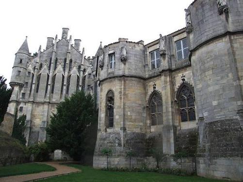
soğuk ve muhafazakâr buldu. Çiftin uzun süre çocukları olmadı. Çok daha sonra, Alienor
kocasını Haçlı seferine katılmaya ikna ettikten ve seferlere katıldıktan sonra çiftin iki kızı
oldu.
Alienor ile VII. Louis’in evliliği, Poitiers sarayını İle-de-France’a taşımıştı. Böylece Fransız
edebiyatının güneyli motifleri kuzeye taşınmaya başladı. Böylece Paris’te gelişmekte olan
edebiyat da herkesin zevkine yanıt veren bir niteliğe bürünmeye başladı.
1137 yılında Alman İmparatoru III. Lothar öldü. Ölmeden önce varisi olarak damadı Heinrich
der Stolze’yi seçmişti. Papalık müdahale ederek Heinrich yerine Hohenstaufen hanedanından
Konrad’ı imparator seçtirdi (Mart 1138).
Poitiers sarayı
92
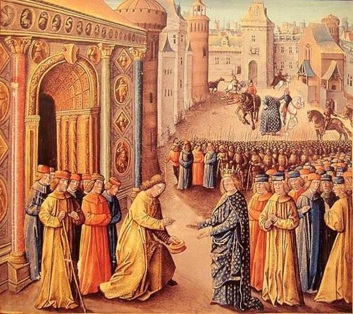
Antakya Kimin?
Raymond, Antakya'da Fransa kralı VII. Lo is’i karşılıyor
Antakya prensi II. Bohemond, Danışmendoğlu Emir Gazi ile yapılan savaşta ölünce, Antakya yönetimi Kudüs kralına geçmişti. II. Bohemond ile evli olan Kralın kızı Alice, Antakya prensliğini elinden kaçırmak istemedi. Halep ve Musul egemeni Zengi ile anlaşma zemini sağlamaya çalıştı. Alice Antakya’yı yönetmek ve buna karşılık kızını Zengi’ye vermek
yanlısıydı. Bu girişimleri öğrenen Kudüs Kralı Antalya’ya geldi. Alice ise babasının kente
girişine mani oldu. Ancak, bazı Antakyalı kral taraftarlarının kapıyı gizlice açması ile kral
kente girerek yönetimi aldı.
Antakya’yı kaybeden Alice’e Lazkiye ve Cebel fief olarak verildi. Antakya Prensliği soyluları da Antakya prensliğinin Kralın küçük kız torunu Constance için muhafaza edeceklerine dair yemin ettiler. Ancak Antakya’dan Kudüs’e dönerken Kral yolda öldü. Onun yerine Kudüs Kralı damadı Foulque d’Anjou (Fulk) oldu. Foulque, II. Baudouin’in en büyük kızı Melisende
ile birlikte taç giymişti. Böylece Antalya Foulque yönetimine girdi.
93
Bu sırada Alice, Antakya’dan vazgeçmiş değildi. Urfa ve Trablus kontları da Alice’i desteklemeye başladılar. Kral Foulque deniz yolu ile ve Trablus kontu ile savaşarak
Antalya’ya zorla gitti. Orda olmaz ise kentin el değiştireceğinden korktuğu için de uzun süre
Antakya’da kaldı. Sonra Kudüs’e dönmek zorunda kalınca yerine Renaud’u vekil olarak
bıraktı.
Haçlıların bu iç çelişkisi Zengi’yi, Antakya’nın ele geçirilmesi fikrine kaptırtmıştı. Kudüs Kralı Fulk ise, Halep yakınlarında Zengi kuvvetlerini basarak, onların gerilemesini sağladı.
Bu sırada Antakya’nın meşru varisi Constance’a soylu bir koca aranmaya başlanmıştı. Evlilik
için Akitanya Dükü IX. William’ın oğlu Raymond seçildi. Akitanya dükünün varisi büyük oğlu olduğu için Raymond topraksızdı. Bu nedenle de Raymond’u İngiliz sarayında şövalye
yapmışlardı. Raymond İngiltere’den gizlice gelerek Constance ile evlenip, Antakya kontu
oldu. Ancak bu emri vakiyi Doğu Roma İmparatorluğu tanımamıştı. Komnenos Antakya’nın
kendine verilmesini istiyordu. Komnenos için ilk Haçlıların babası ile yaptıkları anlaşma
gereği kent onun malıydı.
Antakya’yı kuşatan Komnenos ile Raymond arasında şöyle bir akit yapıldı. Prens Raymond
ve senyörleri, İmparatora bağlılık yemini ederek, imparatorun vassalı haline geleceklerdi.
İmparator istediği her zaman kente girebilecek ve kapılar ona açılacaktı. Eğer İmparator,
Müslümanların elindeki Halep, Şeyzer, Hama ve Humus kentlerini alıp prens Raymond’a
verirse, Raymond bu kentler ile yetinip, Antakya’yı tamamen İmparatora bırakacaktı.
Anlaşmadan sonra Antakya’ya İmparatorun bayrağı çekildi. Ve kuşatma başladıktan 1 yıl
sonra İmparator büyük bir zafer alayı ile kente girdi. Törende vassallık simgesi olarak, Urfa
ve Antakya kontları İmparatorun atının dizginini tuttular. İmparator İoannes (Yuannis) Komnenos, sonunda Normanların Antakya Prensliğine son vermişti. Ama Antakya kalesi hala Normanların elindeydi. Doğu Roma İmparatoru Antakya kalesinin de kendine teslim
edilmesini istiyordu. Haçlıklar ise buna konsey karar verir diyerek İmparatoru oyalıyorlardı.
Sonunda da vermediler.
Bir yıl sonra, İmparator Franklarla birlikte, Halep bölgesini fethe kalkıştı. Zengi Irak Selçuklu
Sultanı Mesut ve komşu Müslüman egemenlerden yardım istedi. Zengi’nin kadısı
Kemalüddin Şehrezuri, Irak Selçuklu Sultanı Mesut bu ülkeye girerse bir daha çıkmaz diye
endişesini belirtti. Zengi ise “ Düşman (Doğu Roma) memlekete hâkim olmak istiyor. O
Halep’i alırsa, İslam artık Suriye’de tutunamaz. Burası Müslüman olmayanların eline
geçeceğine, Müslümanların elinde kalmasını tercih ederim. “ diye düşüncesini açıkladı. Zengi
yardım istemeye Bağdat’a kadı Şehrezuri’yi yolladı. Irak Selçuklu Sultanı Mesut, yardım
talebine pek oralı olmadı. Bunun üzerine Şehrezuri’nin teşvik ve katılımı ile Bağdat halkı
nümayişler yapmaya başladı. Kadı işi başlatmak için bazı din adamları ile kişilere para
vermişti. Bu adamlar, namaz sırasında hatip minbere çıktığında “ Yazık İslam’ın başına
gelenlere… Yazık Muhammed’in dinine “ diye bağırarak olayları başlattılar. Ama olay
başladıktan kısa süre sonra protestoya halk da katıldı. Halkın tepkisi büyüyünce, Irak Selçuklu
Sultanı Mesut, Zengi’nin yardımına bir ordu yollamaya karar verdi. Bu kararın verilmesinde
Şehrezuri’nin Sultan’a, olayları onun gözünde canlandıracak bir şekilde anlatması ve
Sultan’ın Halep düştükten sonra Doğu Roma ordusunun Bağdat’a nasıl gireceğini tahayyül
etmesi de rol oynamıştı. Ama bu sırada işe Anadolu Selçukluları karışmışlardı.
94
Bağdat halkının arada sırada nümayiş yaparak Sultanı ve Halifeyi Haçlılarla savaşa zorlaması
pek sık görülen bir olay değildir. Bütün Sünniler için esas problem Batınilerdi. Daha sonra da
Doğu Roma İmparatorluğu geliyordu. Ama halk 400 – 500 yıldır Doğu Roma ile yapılan
savaşlara alışmıştı. Onu da gündelik hayatın bir parçası kabul ediyordu. Haçlıları ise kimsenin
ciddiye aldığı yoktu.
Anadolu Selçuklu Sultanı Mesut da ordusu ile Doğu Roma İmparatoru İoannes Komnenos’u
izleyerek Çukurova’ya gelmişti. İmparator Kuzey Suriye’yi ele geçirmeye çalışırken, Sultan
da Adana çevresini işkal edip, pek çok gayrimüslim çiftçiyi alıp götürdü. Sultan İmparatoru
sıkıştırıyordu, o da Sultan ile anlaşma yapmak zorunda kaldı ve Constantinopolis’e geri
döndü.
Bu sırada Kadı Şehrezuri 10 bin Selçuk askeri almış, Halep’e doğru yola çıkmak üzereydi.
Zengi’den gelen haber Halep kuşatmasının kaldırıldığını ve Doğu Roma ordusunun
çekildiğini bildiriyordu. Kadı, Irak Selçuklu Sultanı Mesut’tan asker yollamaya gerek
kalmadığını ve askerleri yollama kararından vazgeçmesini istedi. Mesut askerin yollanması
fikrinden vazgeçmiyordu. Sonunda uzun müzakerelerden sonra asker yollamaktan vazgeçildi.
Tarihe bakarken ikide bir karşımıza çıkan bir asker isteyip, sonra vazgeçip asker gelmesin
demek çok sık rastlanan bir durumdur. Bir kere şu tespiti bir daha yapalım. Ordular ve asker
yağma yapmak için savaşmaktadır. Asker bir kere yola çıktımı, elini kolunu doldurmadan
veya mağlup olup kaçmadan geri dönmez. Hatta kaçarken bile soygun yapar. Eşkıyalık
yaparken de dost, düşman ayırmaz, bulduğunu alır. Bu nedenle bir emir veya bey veya feodal
kendi başına başa çıkamayacağı bir düşman tarafından kıstırılırsa, düşmandan daha insaflı
olacağını düşündüğü bağlı olduğu bir üst otoriteyi yardıma çağırır. Ama tehlike ortadan kalkar
kalkmaz da herhangi bir yabancı kuvveti istemez. Üst otoriteler de vassalları hakkında bir
değişiklik yapmak istiyorlar ise, onların en zayıf oldukları anı kollamak ve o zaman hareket
etmek isterler. Yani tehlikede olan emir, yardıma çağırdı mı, artık inisiyatif elinden çıkmış
olur. Bundan sonra ne olacağı belli değildir.
95
Kilise Adaleti
Kilise kuralları ilk önce eski ekümenik kuralların “ canon “, sonra da papalık fermanlarının toplamından oluşuyordu. Ancak bunlar dağınık ve düzensizdi. Kilise kurallarını öğrenmek zor
oluyordu. XII. Asrın ortalarına doğru Bolonyalı keşiş Gratianus, Roma hukuku külliyatını örnek alarak, Kilise kurallarını “ Decretum “ adı altında külliyat olarak yazdı ve düzenledi. Bu yapıldığı zaman resmi bir külliyat değildi. Ancak çok geçmeden kilise hukukunu uygulayan
kilise yargıçları ve bu hukuku öğreten hocalar Decretum’u kullanmaya başladılar. Sonradan
da papalık bunu resmen tanıdı. Papalar yeni kararlarını buna ilave ettiler.
Her piskopos kendi ruhani bölgesinde bir yargıç tarafından yönetilen bir mahkeme kurdu. Bu
mahkemeye zabıt katipleri, avukatlar ve savcılar yardımcı oluyorlardı. Mahkemelerin hukuki
sınırları belirsizdi. Böylece bu mahkemeler sınırlarını durmadan genişlettiler. Bu mahkemeler
başı tıraşlı her papaz için yargılama hakkını aldı. Yargılama hakkını hacılar, Haçlılar, dullar
gibi din dışı sivillere de teşmil etti. Dine karşı işlenen suçları, ahlak ve dine aykırı fiilleri,
büyücülüğü, zinayı, tefeciliği, düelloyu kapsamı içine aldı. Ayrıca evlenme, gömülme ve
vasiyet tanzimi gibi işlerle de uğraşmaya başladı.
Ruhban sınıfının otoritesi, feodallerin ve prenslerin otoritesi ile çatışıyordu. Özellikle adalet
konusunda iktidarın sınırları üzerinde anlaşamıyorlardı. Din dışı siviller güçlüydü ama
Hıristiyanlık nedeniyle de ruhbana bağlıydılar. Papa zaman zaman krallara ve feodallere karşı
aforoz silahını kullanıyordu. O zaman halk birbirini tutmayan ve çoğu zaman birbirine zıt
emirleri hem sivil otoriteden ve hem de ruhbandan alarak ne yapacağını şaşırıyordu. Bunun
sonucu, günahsız yere, çok ağır cezalara çarptırıldıkları da oluyordu.
96
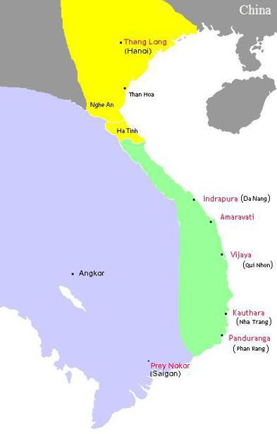
Khmer İmparatorluğu
Khmer İmparatorluğunda
hanedanının
hâkimiyeti sürüyordu. Bu
tarih kesiti Khmerlerin en
parlak dönemleriydi.
Taştan yapılmış
tapınakların en güzel
örnekleri bu zamanda
verildi. Tapınaklar taştan
yapılırken, diğer tüm evler
tahtadan yapılıyordu.
Mobilyalar, kap kacaklar
süsleniyordu. Askerler
zırhlıydılar. Giysilerde
Hindistan’da olduğu gibi
bol mücevher
kullanılıyordu. Zaman su
saatiyle ölçülüyordu.
Kişiler ve evler temizdiler.
Yabancı seyyahlar
özellikle bu temizliği ve
dişleri temizlemek için
kürdan kullanımını
belirtirler. En gözde
eğlence horoz dövüşüydü.
Bu dövüş hem halk
arasında ve hem de
sarayda çok tutulurdu.
Khmer toplumunda
kadının saygın bir yeri
vardı. Genç ve güzel
kızlar ailelerince
hükümdara sunulurlardı.
Bu kızlar sarayda odalık,
Khmer-Angkor
müzisyenlik, dansözlük
yaparlardı. Kadınlar
bulundukları sıfatla siyasi yaşama ve dini yaşama katılırlardı. Onlara resmi roller de verilirdi.
Tapınakların bir başkan tarafından yönetilen manastırları vardı. Bu başkan disiplinden,
ekonomiden sorumluydu. Adak sunmak ve müneccim seçmek onun göreviydi. Bir de
hükümdarın din adamı vardı. Bu hükümdar rahibi törenlerde düzeni sağlardı. Tapınaklara
97
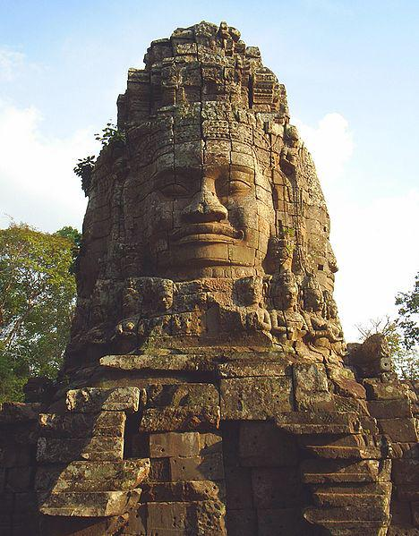
büyük bir çalışan kitlesi hizmet ederdi. Bunlar çevre köylerden yağmur mevsimi işe
alınırlardı. Her köy bir nevi klan gibiydi. Herkes kendi şefinin sözünü dinlerdi. Bu kişilere
bağlı oldukları tanrıdan başka bir tanrı için angarya hizmetinde kullanılmaları yasaklanmıştı.
Örnek olarak verilirse, IX. Yüzyılda Bako tapınağına hizmet edenler 2.253 kişiydi. XII.
Yüzyılda Ta Prohm Tapınağına 79.365 kişi hizmet ediyordu. Bunun 18 tanesi büyük rahip, 2.740 tanesi ayin yönetebilir rahip, 2.202 tanesi yardımcı ve 615’i dansözdü.
Tapınaklara hizmet eden bu kişiler içinde çok miktarda da köle vardı. Köle olmayanlar
vergiden muaftılar. Tapınaklara yapılan bir eylem tüm halka yapılmış kabul edildiğinden
mutlaka ceza uygulanırdı. Suç işleyen Brahmanlar kutsallıkları nedeniyle sadece işten
çıkarılırdı. Diğerleri para cezasına çarptırılırlardı. Para cezasını ödemeyenlere sırtından kırbaç
cezası verilirdi. Bu ceza 100 değneğe kadar çıkardı.
Ta Prohm
98
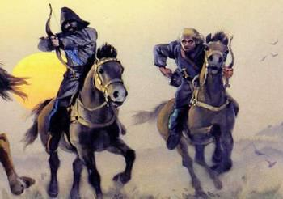
Doğu İran Oğuzları
XI ve XIII. Yüzyıllar arasında doğu İran’da kalabalık Oğuz toplulukları vardı. Bunlar bu
topraklarda göçebe bir hayat yaşamaya devam ediyorlardı. Selçuklu devleti, resmi evraklar
bakımından, bu Oğuzları diğer reayadan ayırmıyormuş gibi davranıyordu. Ama aslında bunlar
reisleri olan ve iç işlerinde serbest kabilelerdi. Devlet bunlara da şıhne tayin ediyordu. Ancak
Oğuzlara tayin edilen şıhnelerin görev ve yetkileri, yerleşik topraklara tayin edilen
şıhnelerden çok daha azdı.
Oğuzlara tayin edilen şıhne, kabile reisi nezdinde devleti temsil ediyor, devlet ile reis arasında
iletişimi kuruyor, otlak ve sulama yerlerini tayin ediyor, yerleşiklere karşı Oğuzların iyi
davranmalarını sağlamaya çalışıyor ve devlete olan vergileri tahsil ediyordu. Tabii Oğuzlara
yollanan şıhnelerin, sabit bir yerleri yoktu. Onlar da Oğuzlarla birlikte dolaşıp, duruyorlardı.
Oğuzların göçebe ekonomisi aslında kentlerin ekonomisini tamamlayıcı bir rol oynuyordu.
Devlet bunu böyle kabul edip etrafa bildiriyordu. Bu anlayışta hakikat payı olduğu gibi,
devletin yerleşiklere göçebeleri faydalı gösterme isteği de vardı. Aslında bu görüş, Büyük
Selçuklu Sultanının görüşü olmalıdır. Yoksa yerleşik düzenden ve genel olarak İran kökenli
olan devlet ileri gelenlerinin ne Oğuzlar için ve ne de ordudaki Türkler için hiç pozitif
düşünceleri yoktu. Ama yapacakları bir şey de yoktu.
99
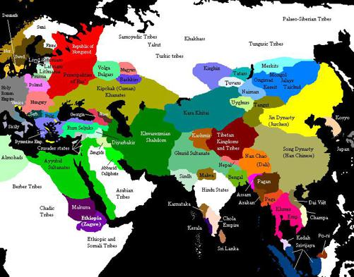
Karahitaylar
Bu sırada Çin’den kovulup, efsanevi bir tarzda tekrar göçebeliğe dönmüş olan Kitanlar
(Kitaylar), Ye-liu Ta-şi (1130 – 1142) adlı bir şefin yönetiminde Orta Asya’yı geçip, Turfan
ve Kuça bölgelerine geldiler. Buradan da Karahanlı devletinin sınırlarına vardılar. Kitanlar Karahanlı sınırına vardıklarında, Karahanlılar hem Karluklarla ve hem de Kanglılarla savaşıyorlardı. Kanglılar, Aral gölü kuzeyinde yaşayan bir Türk kabilesiydi. Bu kargaşada
Kitanlar Balasagun’a girdi. Ye-liu Ta-şi oradaki Karahanlı yerel yöneticiyi yerinden indirerek,
yerine kendi geçti. Balasagun’dan sonra Kitanlar Kaşgar ve Hoten’i de ele geçirdiler. Kitanlar
karşısında Semerkant yöneticisi de yenildi (1137). Ye-liu Ta-şi kendini Kür (Gur) Han ilan etti.
Kuzey Çin’de Kitanların Liao hanedanı adı ile 2 asır hüküm sürdüğünü söylemiştik.
Karahitaylar (Kitanlar, Kitaylar) Batıya geldikten sonra da Çin kaynakları onları bir Çin hanedanı kabul etmeye devam etmişlerdir. Çinliler muntazam olarak tuttukları İmparatorluk
yıllıklarında, Karahitaylardan bahsetmeye devam etmişlerdir. Çinlilere göre Karahitayların
Batıdaki hakimiyetleri Doğudaki hakimiyetlerinin bir devamıdır. Zaten Karahitaylar da Çin’i
100
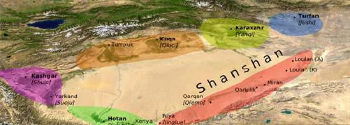
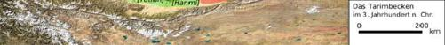
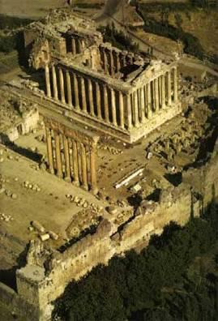
tamamen benimsemişlerdi. Bu nedenle onların Batıda kurmuş oldukları hâkimiyet aslında bir
Çin hâkimiyetidir.
Tarım havzası
Kitanlar Budisttiler, kurdukları devlet de Budist devlet oldu. Uygurlar uzun bir süredir
Müslüman baskısı altında yaşıyorlardı, böyle Budist bir devleti görür görmez, onun koruması
altına girdiler. Olup bitenler İslamiyet için bir felaketti. İslamiyet Asya’da gerilemeye
başlamıştı. Meşhur Müslüman kentleri şimdi Budistlerin eline geçmişti.
1138 yılında kendini halife ilan etmiş olan
Raşit Haşhaşinler tarafından öldürülmüştü.
Kuvvetli olasılık ile Mesut, iki halife olmasın
diye birini ortadan kaldırtmıştı. 1138 yılında
Tikrit dirliğinde bulunan Eyyubiler, Musul
Atabeyi İmadettin Zengi’nin hizmetine
girdiler. İmadettin Zengi, Eyyubi ailesi başkanı
Necmettin Eyyub bin Şadi’yi Baalbek
valiliğine atadı.
Baalbek
101
Harzemşah Sencer için Problem Oluyor
Bu sırada Sultan Sencer vassalı Harzemşah Atsız ile savaşıyordu. Son derece verimli bir
delta’da kurulmuş olan Harizm, bölge olarak refah içinde bir bölgeydi. Deltanın verimli toprakları dışında, Harizm, kıtaları birbirine bağlayan ticaret yollarının da kavşağındaydı.
Tarım, ticaret derken ülke zengin bir ülkeydi. Harizm’de Müslümanlık ve Hıristiyanlığın
yanısıra Zerdüştlük de hüküm sürüyordu. Zerdüşt dini burada hala çok kuvvetliydi. Bölgenin
Türkleşme süreci başlamış ama daha yolun başıydı.
Kutbettin Muhammed bir Selçuklu kölesiydi. Babası Anuş Tekin’di. Gösterdiği liyakat sonunda 1097 yılında Horasan valiliğine getirilmişti. Kutbettin Muhammed (1097 – 1127)
Selçuklulara ve özellikle Sultan Sencer’e çok bağlıydı. Oğlu Atsız’ı da bu bağlılık içinde
yetiştirdi. Atsız (1127 – 1156) bedeli ne olursa olsun Selçuklulara sadıktı.
Büyük Selçuklu Sultanı Sencer de Atsız’a büyük değer veriyor ve bu tutumu diğer
komutanların kıskançlığına sebep oluyordu. Pek çok dedikodu üretilerek Sultan Sencer’in
Atsız’a olan teveccühü yok edilmeye çalışıldı. Ama Sultan bunların hiç birini kaale
almıyordu. Gazne seferinden dönülürken, Atsız, Sultan’dan görevi başına, Harzem’e dönmek için müsaade istedi. Sultan Sencer’in yakınları “ Atsız giderse, bir daha onun yüzünü
göremezsin “ dediler. Sultan, “ hizmetleri nedeni ile üzerimizde hukuku var “ diyerek,
kimseyi dinlemeyip, Atsız’ı yolladı.
Atsız’ın Genel Valilik yaptığı Harzem (Harizm), bir Selçuklu eyaleti idi. Yani Karahanlılar veya Gazneliler gibi vassal bir ülke değildi. Ama geri dönen Atsız, vassal bir ülke emiri gibi
davranmaya başladı. Sultan Sencer’in emir ve müsaadesini almadan Cend’i ve Menkışlak’ı ele geçirdi.
Sultan Sencer bir Genel Valinin bağımsız davranışlarına müsaade edemezdi. Sultan Sencer,
savaştan sonra yayınladığı Fetihname’de Atsız ile savaşının nedenlerini uzun uzun saymıştır.
Sencer ordusu ile Atsız üzerine yürürken, Atsız da buna hazırlıklı olmalıdır ki o da ordusu ile
Sultanı karşılamaya çıktı. Ülkenin stratejik konumu Atsız’dan yanaydı. 1138 yılında Hezaresb
kalesi önünde yapılan savaşı bir saat içinde Selçuklu ordusu kazandı. Bir saat içinde 10 bin
civarında Harzem ordu mensubu ya öldürülmüş veya esir edilmişti. Atsız kaçtı. Atsız’ın oğlu
Atlı esir düşenler arasındaydı, Sultan onu hemen öldürttü.
102
Sultanın Harzemşahlı Atsız ile savaşmasını fırsat bilen Irak Sultanı Mesut, kuvvetli bir
olasılık ile bağımsızlık kazanmak istedi. Dergüzini soyundan gelen ve Sencer tarafından tayin
edilen veziri görevinden aldı. Yeni vezir Hazin, Mesut’u Karasungur ve diğer komutanların
tahakkümünden kurtarmaya çalıştı. Şeriata aykırı olan vergiler kaldırıldı, hırsızlıklar ve
suiistimaller soruşturulmaya başlandı. Karasungur ve etrafında birleşen komutanlar, vezir
Hazin’in kendilerine teslimini ültimatom vererek Sultan Mesut’tan istediler. O da, vezirin
kafasını kestirerek, Karasungur’a yolladı. Böylece sivil idarenin askerler üzerinde yönetim
kurması çabaları da boşa gitti. Karasungur, Mesut’a kendi veziri İzzülmülk’ü vezir olarak
verdi. Artık vezir tayinini de Atabey yapıyordu. Bundan sonra fiilen, Mesut’un Irak üzerinde
bir hâkimiyeti kalmadı. Irak Selçuklu devleti Karasungur’un ve komutanların elinde kukla bir
yönetime dönüştü. Irak Selçuklu Sultanlığına komutanlar tahakküm ederken, Halifeliğe de
vezirler tahakküm ediyorlardı.
Atsız’ı mağlup eden Büyük Selçuklu Sultanı Sencer, savaştan sonraki 2 ay içinde tüm
Harizm’i ele geçirdi. Harzem (Harizm) ülkesini yeğeni Süleyman Şah’a melik unvanı ve bir
divanla beraber verdi. Sultan 1139 yılı başlarında Horasan’a döndü. Atsız, yenilgisinden 5 – 6
ay sonra Buhara’ya saldırarak bu kenti ele geçirdi. Buhara valisi Zengi bin Ali’yi öldürttü ve
Buhara kalesini yıktırdı.
1139 yılında Portekiz’de I. Alfonso Henrique, kral ünvanını aldı. Babası Henry, Fransa Kralı
II. Robert’in torunuydu. Yani Capet hanedanındandı. Baba Henry 1093 tarihinde Portekiz
kontu olmuştu. Bu hanedan 1578 yılına kadar Portekiz tahtında hüküm sürecektir.
1139/1140 Gence’de büyük bir deprem oldu. Söylentiye göre bu depremde 230 bin kişi ölmüştü. Ölenler arasında Karasungur’un karısı ve iki oğlu da vardı. Gürcüler bu durumdan
yararlanarak Gence’ye hücum ettiler. Bu hücum sırasında da pek çok insan öldü. Ölmeyenleri
de Gürcüler tutsak alıp, götürdüler. Bunun üzerine Karasungur Gence üzerine yürüyerek,
Gürcüleri mağlup edip, pek çoğunu da öldürdü. Gence kenti de yeniden imar edildi. Bu arada
Karasungur, uzun süren bir hastalıktan sonra, Erdebil’de öldü (1140/1141). Karasungur,
ölümüne yakın, Çavlı Candar’ı yanına çağırıp, onu yerine tayin etti. Irak Selçuklu Sultanı
Mesut da bunu aynen kabul etti.
1140 yılında Doğu Roma İmparatoru yine Kilikya’da idi. Bu sırada Selçuklu ve Danışmend
Beyliği kuvvetleri Karadeniz’de bazı kentleri ele geçirdiler. İoannes kuzeye giderek, Niksar
kentini kuşattı. Niksar, Danışmend Beyliğinin Karadeniz bölgesine yaptığı akınlarda üs olarak
kullanılıyordu. Doğu Roma’nın Niksar kuşatması 6 ay sürdü. İmparator İoannes’in ordusu ile
Danışmend emir’i Melik Mehmet’in ordusu karşılaştı. Savaşı Danışmendliler kazandılar.
İoannes Komnenos Niksar kuşatmasını kaldırarak, Başkente geri dönmek zorunda kaldı.
103
Kim Kimin Hamisi
Büyük Selçuklu devleti Karahanlıların hamisi durumundaydı. Karluk Türkleri,
Semerkant’taki Karahanlı hükümdarı ile çatışmaya başlamıştı. Kitanlar (Karahitaylar), Karlukların koruyucusu kesilmişlerdi. Tehlike altındaki Karahanlılar Sultan Sencer’den
yardım istediler. Zaten doğusunda Kitanların kurduğu Budist devlete dur demek onun
göreviydi. Sultan Sencer sefer hazırlıklarına başladı. Bu meyanda olarak, Sencer kanatlarını
emniyet altına almak için Atsız üzerine de bir sefere hazırlanmaya başladı. Bunun üzerine
Atsız, Sultan Sencer’in yüksek hâkimiyetini tekrar kabul ederek, ona yeminle biat etti.
Büyük Selçuklu ordusu, toplanır ve hazırlıkları ilerletirken, korkan Karluklar yaşadıkları
Semerkant etrafındaki yerleri terk ederek Karahitaylara sığındılar. Sencer, Karahitaylarla
savaşmak kararındaydı. Irak Selçuklu Sultanına bir mektup yollayarak, ordusunu toplayıp Rey
kentine gelmesini istedi. Savaştan önce veya sonra ihtiyacı olursa, orduyu isteyecekti. Irak
Selçuklu vezirleri ise ordunun Rey de değil Irak sınırları içinde toplanmasından yanaydılar.
Bu tartışmaların yapılması hem Irak Selçuklularının Büyük Selçukluların tam bir kuklası gibi
davranmak istemediklerini ve hem de Sultan Sencer’e yardımdan çok kendi sınırlarını
müdafaa etmeyi düşündüklerini gösterir. Tartışma yapıldı ama Irak Sultanı Mesut amcası
Sencer’in emrine uyarak, ordusunu toplayıp, Rey kentine gitti.
Sultan Sencer, ordusu ile Semerkant’a geldi. Burada Karahitay hükümdarı Gürhan’dan bir
mektup aldı. Gürhan, Karluk Türkleri hakkında Sultan Sencer nezdinde şefaatte bulunuyor ve
onun Karlukları affetmesini istiyordu.
Sultan Sencer bu mektubu, hâkimiyet hakkına bir müdahale olarak algıladı. Bu mektuptaki
ifadeler, sanki Gürhan’ın Sencer’i kendinden aşağı görüyormuş gibi bir izlenim yaratmıştı.
Sultan Sencer mektuba çok alınmıştı. Verdiği cevapta, Karahitay Hanını Müslüman olmaya
çağırdı ve tehdit etti. Sencer bu mektubunda askerlerini ve marifetlerini mübalağa ederek
anlatmıştı. Sultan Sencer’in o sıradaki veziri Nizamülmülk’ün torunu Dasirüddin Tahir idi.
Tahir bu mektubun yollanmasını istemedi ve mektuba karşı çıktı. Ama mektup yollandı.
Cevap her açıdan Gürhan’ın mektubunu aşmıştı. Savaş arayan Sultan Sencer’di.
104
Katwan Savaşı
9 Eylül 1141 yılında Katwan’da, Semerkant yakınlarındaki bozkırda Selçuklu ve Kitan ordusu karşılaştı. İki ordu da 100 bin kişi civarında, büyüklük açısından birbirine yakın büyüklükte
güçlerdi. Bu savaş tarihin kaydettiği en büyük savaşlardan biridir. Savaş korkunç oldu.
Türklerden 30.000 kişi ölü veya yaralı olarak savaş meydanında kaldı. Selçuklu ordusundan
sağ kalanlar artık sadece kaçmayı düşünüyorlardı. Sencer ve Batı Karahanlı devleti egemeni
Mahmut Horasan’a kaçtılar.
Sultan Sencer’in, Karahanlı hükümdarı Arslan Hanın kızı olan eşi Türkan Hatun, sol cenah
komutanı Sistan meliki Ebul Fazl, sağ cenah kumandanı Kamac esir düşmüşlerdi. Ebul Fazl,
Sultan Sencer’in çetri altında durarak, Sultanın kaçabilmesini sağlamış ve Sultan yerine esir
edilmişti. Bunlar bir yıl esarette kaldıktan sonra, Türkan Hatun 500 bin dinar, Kamac 100 bin
dinar diyet ile Sistan meliki ise kahramanlığına hürmeten bedava hürriyetlerine kavuştular.
Bu savaştan sonra Kitanlar Seyhun ve Ceyhun arasındaki tüm bölgeyi de ellerine geçirerek
yeni bir bozkır İmparatorluğu kurdular. Bu yeni imparatorluğun adı Karahitaylar’dı.
Karahitaylar Budist bir imparatorluktular ve Çinlilerden çok şey öğrenmişlerdi. Çinliler
Gürhan’ı imparator olarak kayda aldılar.
Büyük Selçuklu devletinin bu yenilgisi geniş yankılar uyandırdı. Zamanın insanları bunu
Talas savaşının Çin tarafından alınmış bir rövanşı olarak gördüler. Asya’da yaşayanlar arasında ise bu İslam aleyhtarı bir tepki haline dönüştü. Bu tepkiden Hıristiyan Kereyitlerin
Ong Hanı tarafından canlandırılacak olan, Papaz Jean efsanesi ortaya çıktı. Katwan savaşı Haçlılarca duyulduktan sonra, Haçlılar Doğudan Papaz Jean adında birinin kendilerine
yardıma gelmekte olduğuna inandılar.
Kitanların bu zaferi ile Doğudan Müslüman topraklara girmeye çalışan Oğuzların önündeki
engel de yıkılmış oldu. Oğuzları Selçukluların kuvvetli müdafaa hatları önlüyordu ama şimdi
müdafaa hattı falan kalmamıştı.
Sultan Sencer’in dolayısı ile Büyük Selçuklu devletinin gücünün bitmesi ile bütün Selçuklu
Sultanları zor duruma düştüler. Arkalarında gerektiğinde onları koruyan büyük kuvvet gidince
Sultanlar ve vasi hükümdarlar tamamen Atabeylerin taahkümü altına girdiler.
Katwan (Katvan) savaşının sonucunda Gur Hükümdarlarından Kutbüddin Muhammed Horasan’a doğru ilerleyerek Herat kentini alıp, Belh’e kadar geldi. Herat şehri halkı, Selçuklu yönetimine Gur yönetimini tercih ederek, Kutbüddin Muhammed’i kendileri kentlerine davet
etmişlerdi. Gurlular burada adil bir yönetim kurdular.
Bundan sonra Sultan Sencer bir yandan Harizm Atsız’a, diğer yandan Gurlara karşı, Doğuda
iki cephede birden savaşacaktır. Bu iki cephede birden savaşması, ileride göreceğimiz gibi
Sultan Sencer’in Harizm karşısında tavizkar bir tutum takınmasına sebep olacaktır.
105
Harzemşahların Yükselişi
Harzemşah Atsız’ı, babası, Selçuklulara bağlı olacak bir tarzda yetiştirmişti. Atsız (1127 –
1156) bedeli ne olursa olsun Selçuklulara sadıktı. Ama bir sürü olay peş peşe gelince,
sonunda ayaklanmış ve 1138 yılında yenilmişti. Selçuklular mağlup Atsız’ı çok aşağıladılar.
O ise bu aşağılamayı hiç unutmayacaktı. Sultan Sencer, Atsız’ı görevden alarak Harizm’e yeni bir vali ve divan atamıştı. Ancak Harizm halkı bu yeni yönetimden memnun değildi ve
Atsız’ın ailesinin uzun zamandır devam eden yönetimini özlüyordu.
1141 yılında Sultan Sencer, Karahitaylara yenilince, Atsız bunu fırsat bildi. Merv ve Nişabur
kentlerine girdi (1141). Merv’de Sultan Sencer’in hazinesini ele geçirdi. Ama kısa bir süre
sonra bu kentleri terk etmek zorunda kaldı. Selçuklu İmparatorluğunun başkenti olan Merv,
Atsız’dan şefaat dilenmişti. Atsız, şehre girmedi. Ama daha sonra rehin olarak Ebul Fazl
Kirmani’yi almak isteyince halk ayaklanıp, Harizm askerlerini kentten kovdular. Kentin
kapılarını kapadılar. Atsız sonunda kent halkının direncini kırdı. Merv’in ileri gelenlerinden
pek çok kişiyi öldürüp, pek çok din adamını da beraberinde Harizm’e götürdü.
Atsız Harzemşah devletinin esas kurucusu kabul edilir. Ancak Harizm için enteresan olan
gelişme bu ülkenin hep bir ülkenin vassalı olarak yaşamış olmasıdır. Samanoğullarının, sonra
Gaznelilerin ve Karahanlıların, daha sonra Selçukluların vassalı idiler, şimdi de
Karahitayların egemenliğini kabul etmişlerdi. Atsız’ın kurduğu Harzemşah devleti kaderine
karşı gelip sonunda bağımsız olabilecek miydi?
Hatırlanacağı gibi bu sıralarda Gazne İmparatorluğunun başında Behram Şah vardı (1118 –
1152). Afganistan’ın dağlık bölgelerinde de Gur adlı bir İran kabilesi yaşıyordu ve burada müreffeh bir yaşam kurmuşlardı. Gurların başında İzzüddin Hüseyin’in oğlu Seyfüddin Suri
vardı. Seyfüddin Suri, İzzüddin’in üçüncü oğlu olmasına rağmen asil bir anneden geldiği için
başa geçmişti. Hatırlanacağı gibi ikinci oğul Kutbüddin Muhammed Cibal (Güneydoğu
Anadolu’nun İran tarafı) bölgesinin başındaydı.
1141 yılında Macaristan tahtına II. Geza geçti. Macar kralları aynı zamanda Hırvatistan ve
Slovakya kralları idi. Yalnız bu krallar her ülke tarihinde farklı numaralar alırlar. Örneğin Macar Kralı II. Geza (1141 – 1162), Hırvatistan kralı olarak I. Geza adını alır. Tahta çocuk
yaşta çıktığı için ülkeyi bir süre annesi yönetmiştir. Gelecekde Macaristan’ın en güçlü
krallarından biri olacaktır.
1142 yılına kadar Fransa Kralı VII. Louis, Kraliçe Alienore’un etkisi ile Papalığa ve
Champagne kontluğuna (Thibaut de Blois) karşı mücadeleye girişmişti. Vermandois Kontu
Raoul, Champagne kontunun yeğeni olan ilk eşinden boşanarak, Kraliçe Alienore’un (Eleonore) kız kardeşi Alice ile evlenmiş, bu evliliği Papa hükümsüz kılmıştı. Buna kızan VII.
Louis, Champagne Kontunun arazisine saldırdı ve pek çok Hıristiyan öldü. Bunların bir kısmı
da yanarak ölmüşlerdi.
106
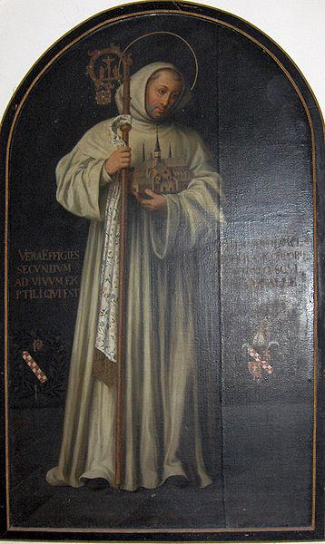
Bundan sonra herhalde Papa’nın yaptığı tehditler yüzünden VII. Louis, Bernard de Clairvaux
ve Papalığın bütün isteklerini yerine getirmeye başladı. Champagne topraklarını terk etti.
Artık Kral Alienore’un etkisinden kurtularak Bernard’ın etkisi altına girmişti. Papalık ile Fransa arasındaki ilişkiler düzeldi.
Bertnard of Clervaux
107
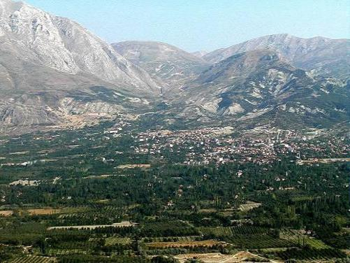
Rum-Rum Selçuklu savaşı
Uluborlu
Rum Selçukluları Türkmen desteği ile Uluborlu’yu kuşatmıştı. Doğu Roma İmparatoru 1142
de kuşatmayı dağıtmak ve Antalya yolunu açmak için sefere çıktı. İmparator Beyşehir Gölüne
geldiğinde, bu gölün adalarında yaşayan Rum halk Türkmen’den yana bir tavır aldı. Bu halkın
düşünce biçimi Türklere yaklaşmıştı. Doğu Roma İmparatoru adaları direnen Rum halkın
elinden zorla aldı ve onları cezalandırdı. Anadolu halkı Türklere yakınlaşmış, Doğu Roma’ya
yabancılaşmıştı.
Beyşehir Gölü
108
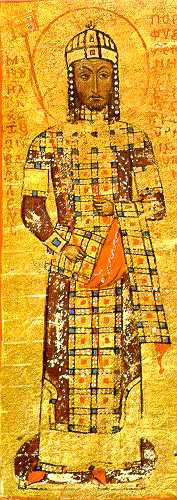
1142 yılında İmparator İoannes (Yuannis) Antakya kentinin kendine teslim edilmesini istedi.
Antakya prensi kenti vermeye yanaşsa bile özellikle rahipler karşı çıktılar. “ Prensin kenti
vermeye hakkı yok “ dediler. Bunun üzerine İmparator Çukurova’ya geri döndü.
1142 yılında Haçlılar Elbistan bölgesine girerek hem Hıristiyan halkın mallarını yağmaladılar
ve hem de orada bulunan Türkleri öldürdüler. Yardıma gelen bir Türk birliği de Haçlılarca
mağlup edildi.
1142 yılında Mengücüklü İshak Bey öldü. Bunun üzerine Danışmendoğlu Melik Mehmet (Muhammed) Kemah’ı ele geçirdi. Ama o da ölünce Kemah tekrar Mengücüklülere geçti.
İshak Beyin ölümü üzerine Mengücüklü beyliği Erzincan (Kemah) ve Divriği olarak iki kola
ayrıldı. Aynı yıllarda Atabey Zengi, Yınaloğulları üzerine yürüyerek, Ergani, Halar, Tulhum
ve Çermük’ü ele geçirdi.
Danışmendoğlu Melik Mehmet, 8 yıllık bir saltanattan
sonra öldü. Melik Mehmet’in ölümü ile Danışmend
devleti taht kavgaları ile kökünden sarsıldı.
Danışmendlerin bu sarsıntısı sırasında Anadolu’da
üstünlük de ağır ağır Anadolu Selçuklularına geçiyordu.
Danışmend devleti taht kavgaları sırasında, Melik
Mehmet’in kardeşi Yağıbasan, Melik Mehmet’in dul eşi
ile evlenerek, kendini Danışmend hükümdarı ilan etti.
Kirman Selçuklu Meliki Arslanşah ihtiyarlamış ve
devleti yönetemez hale gelmişti. Oğlu Muhammed, tahta
el koyarak babasını gözaltına aldırdı. Arslanşah bundan
sonra 3 yıl daha yaşayarak 1145 yılında öldü. Arslanşah
dönemi Kirman halkı için çok mutlu 42 yıllık bir dönem
olmuştur.
1143 yılında Doğu Roma İmparatoru İoannes
Komnenos, Filistin’e karşı yeni bir sefer hazırlığı
başlatmıştı. İmparator Kudüs’e kadar gitmeye kararlıydı.
İmparatorun gelmesini istemeyen Kudüs Kralı hemen
konseyi topladı. Konsey dar Kudüs arazisinin büyük bir
orduyu besleyemeyeceğini, kıtlık olacağını söyleyerek,
İmparatordan sadece 10 bin kişilik bir ordu ile gelmesini
istedi. Bunu şanına yakıştırmayan İmparator ise Kudüs’e
gitmekten vazgeçer gibi oldu.
Bu sırada sefer hazırlıkları sürerken verilen bir av
partisinde zehirli bir okla yaralandı. Kurtarılamayarak 8
Nisan 1143 tarihinde öldü. İoannes’in ölümünden bir yıl
önce iki büyük oğlu peş peşe ölmüşlerdi. İmparator
ölünce, yerine doğuştan komutan yetenekli olan
dördüncü oğlu Manuel geçti. Manuel Komnenos’un
Manuel Kommenos
İmparatorluğu 1143 yılından 1180 yılına kadar
sürmüştür. Manuel Komnenos, Doğu Roma ordusunu
Kilikya’dan geri getirirken, yolda Sakarya’da, Menderes bölgesinde ve hatta İznik’te Türkler
ile çatışmak zorunda kalmıştı. Doğu Roma ordusuna saldıran Türklerin büyük bir kısmı
109
Anadolu Rum Devleti tebaasıydı. Bu nedenle Yağıbasan ile Manuel arasında doğal bir
yakınlaşma oldu.
Manuel Komnenos çok yönlü yeteneklere sahip bir kişiydi. O sırada Batı Avrupa’da
uygulanmakta olan adetleri seviyor ve bunları Doğu Roma Sarayına adapte etmeye
çalışıyordu. Sarayda şövalye tarzı bir yaşam başlamıştı. Bu tarz Saray erkânının hoşuna
gitmiyordu. Doğu Roma bürokrasisi ve halk adetlerine düşkündü. Manuel, önemli görevlere
Batılı yabancıları getirmeye başladı. Bu Doğu Romalıların daha da tepkisini çekti.
Manuel Komnenos, babası döneminde başlayan Normanlara karşı Alman ittifakını devam ettirip, kuvvetlendirdi. Manuel’in Alman İmparatoru III. Konrad’ın baldızı Berthavon
Sulzbach ile evlenmesi daha önce kararlaştırılmıştı. İmparator Manuel, Berthavon Sulzbach ile evlendi.
110
Selçuklular ve Doğusu karışık
Kendi iç mücadeleleri nedeniyle Danışmendoğullarının etkisi gittikçe azalıyordu. Buna paralel olarak Anadolu’da Anadolu Selçuklu devletinin hâkimiyeti yeniden kuvvetleniyordu.
Sultan Mesut, Danışmendoğlu Zünnun’u kardeşleri Tunus ve İbrahim ile amcasına karşı
destekledi. Zünnun’a yardım amacı ile Sivas’ı alıp, Malatya’yı kuşattı (Haziran 1143). Bu
sırada Doğu Roma İmparatoru Manuel Komnenos Kilikya’da idi. İmparator ordusu ile
dönüşte Selçuklu topraklarına girince, Anadolu Selçuklu Sultanı Mesut da Malatya
kuşatmasını kaldırarak teyakkuz durumuna geçmişti.
Baştan Danışmendoğlu Mehmet’in oğlu Zunun’u destekleyen Rum Selçuklu hükümdarı
Mesut, sonradan ailenin en büyüğü olma gerekçesi ile Yağıbasan’ı destekledi. Yapılan toprak